2025
Dr. Bernadette Arakwiye Minister of Environment Republic of Rwanda
It is an honor to present Rwanda’s Nationally Determined Contribution (NDC) 3.0. Rwanda stands at a defining moment in its climate action journey. Building on the foundation of our green growth and climate resilience strategy and the commitments laid out in NDC 2.0, this enhanced NDC responds decisively to the findings of the first Global Stock Take under the Paris Agreement.
The stocktake confirmed that global efforts remain insufficient to limit warming to 1.5°C and called on all parties to raise ambition across mitigation, adaptation, and means of implementation.
Rwanda has answered that call with concrete, data-driven NDC 3.0 actions. This plan sets an ambitious economy-wide mitigation target of 53% reduction in greenhouse gas emissions by 2035 compared to a Business-As-Usual (BAU) scenario, a significant increase from the 38% target for 2030 under NDC 2.0. This new target is comprehensive: covering key sectors (land use, land-use change, and forestry, energy, agriculture, waste, industrial process and product use).
Although we are deepening our mitigation efforts, adaptation is Rwanda’s foremost climate priority. The evidence of climate change impacts is clear. In 2023 alone, floods and landslides claimed 131 lives and caused damages exceeding USD 415 million in northern, western and southern provinces of Rwanda.
NDC 3.0, therefore places adaptation at its core, with robust, measurable interventions across nine priority sectors: water resources, agriculture, land and forestry, urbanization and human settlements, health, transport, mining, water, sanitation and hygiene as well as cross-cutting areas. We are also pioneering a dedicated loss and damage response mechanism that ensures strategic access to international finance including the fund for responding to loss and damage to address the growing climate impacts that lie beyond the reach of adaptation alone. Implementing NDC 3.0 requires unprecedented resources, where the total cost through 2035 is estimated at USD 12 billion; USD 5 billion for mitigation and USD 7 billion for adaptation.
This NDC is the product of an inclusive, multi-stakeholder process engaging ministries, local governments, civil society, youth, women, children, and the private sector. It embeds principles of gender equity, climate-induced mobility, and green job creation. It is also fully aligned with Rwanda’s vision 2050, second national strategy for transformation, and the Global Sustainable Development Goals.
NDC 3.0 is more than a compliance document; it is a declaration of resilience. It affirms Rwanda’s unwavering commitment to the Paris Agreement and our determination to build a green, inclusive, and climate-proof future not in spite of our vulnerabilities, but because of our resolve to overcome them. We invite all partners domestic and international; to walk with us on this journey.
AFOLU |
Agriculture, Forestry and Other Land Use |
BAU |
Business as usual |
bn |
Billion |
BRT |
Bus rapid transport |
BTR |
Biennial Transparency Report |
BUR |
Biennial Update Report |
CCDR |
Country Climate and Development Report |
CFL |
Compact fluorescent lamp |
CNFS |
Climate and Nature Finance Strategy |
CO2 |
Carbon dioxide |
CO2e |
Carbon dioxide equivalent |
CoK |
City of Kigali |
COP |
Conference of the Parties |
CORSIA |
Carbon Offsetting and Reduction Scheme for International Aviation |
DDS |
District Development Strategy |
DIDIMAC |
District Disaster Management Committee |
EICV7 |
Seventh Integrated Household Living Survey |
ESSP |
Energy Sector Strategic Plan |
ETF |
Enhanced Transparency Framework |
EV |
Electric Vehicle |
F-gas |
Fluorinated gas |
FRLD |
Fund for responding to Loss and Damage |
GDP |
Gross Domestic Product |
GESI |
Gender, equality and social inclusion |
GGCRS |
Green Growth and Climate Resilience Strategy |
GHG |
Greenhouse gas |
GoR |
Government of Rwanda |
GWP |
Global warming potential |
Ha |
Hectare |
HFC |
Hydrofluorocarbon |
HFO |
Heavy fuel oil |
IPCC |
Intergovernmental Panel on Climate Change |
IPPU |
Industrial Processes and Product Use |
ITMO |
Internationally Transferred Mitigation Outcome |
IWRM |
Integrated Water Resources Management |
L&D |
Loss and damage |
LEAP |
Low Emissions Analysis Platform |
LFG |
Landfill gas |
LPG |
Liquefied petroleum gas |
LULUCF |
Land use, land use change and forestry |
M&E |
Monitoring and Evaluation |
MBT |
Mechanical and biological treatment |
MEL |
Monitoring, Evaluation and Learning |
MINAGRI |
Ministry of Agriculture and Animal Resources |
MINALOC |
Ministry of Local Government |
MINECOFIN |
Ministry of Finance and Economic Planning |
MINEDUC |
Ministry of Education |
MINEMA |
Ministry of Emergency Management |
MININFRA |
Ministry of Infrastructure |
MoE |
Ministry of Environment |
MPGs |
Modalities, procedures, and guidelines |
MRV |
Measuring, Reporting and Verification |
Mt |
Million metric tonnes |
MW |
Megawatt |
NADIMATEC |
National Disaster Management Technical Committee |
NAP |
National Adaptation Plan |
NBS |
Nature-based solution |
NDC |
Nationally Determined Contribution |
NDIMS |
National Disaster Information Management System |
NGO |
Non-Governmental Organisation |
NISR |
National Institute of Statistics of Rwanda |
NLA |
National Land Authority |
NMT |
Non-motorised transport |
NPDM |
National Platform for Disaster Management |
NST2 |
Second National Strategy for Transformation |
ODS |
Ozone depleting substances |
PaMs |
Policies and Measures |
SHCCIPV |
Photovoltaic |
RAB |
Rwanda Agriculture Board |
RBME |
Results Based Monitoring and Evaluation |
REG |
Rwanda Energy Group Ltd |
REMA |
Rwanda Environment Management Authority |
RFA |
Rwanda Forestry Authority |
RGF |
Rwanda Green Fund |
RHA |
Rwanda Housing Authority |
RMB |
Rwanda Mines, Petroleum and Gas Board |
RTDA |
Rwanda Transport Development Agency |
RURA |
Rwanda Utilities Regulatory Authority |
RWF |
Rwandan Franc |
RFA |
Rwanda Forestry Authority |
RWB |
Rwanda Water Resources Board |
SEDIMAC |
Sector Disaster Management Committee |
SFM |
Sustainable Forestry Management |
SHCCI |
Strengthening Human Capital and Climate Integration |
SPCR |
Strategic Program for Climate Resilience |
SSP |
Sector Strategic Plan |
SWG |
Sector Working Group |
SWH |
Solar water heater |
t |
Metric tonne |
TNC |
Third National Communication under the UNFCCC |
TWG |
Thematic Working Group |
UNFCCC |
United Nations Framework Convention on Climate Change |
USD |
United States (US) Dollar |
VCM |
Voluntary carbon market |
WASAC |
Water and Sanitation Corporation |
WASH |
Water, sanitation and hygiene |
WtE |
Waste to Energy |
The Republic of Rwanda submitted its first updated and revised NDC (NDC 2.0) to the United Nations Framework Convention on Climate Change (UNFCCC) Secretariat in May 2020. As required under the Paris Agreement, Rwanda is now pleased to submit this updated and enhanced NDC (NDC 3.0).
The Paris Agreement requires Parties’ updated contributions to be informed by the outcome of the first Global Stocktake (GST) which concluded in 2023 and assessed collective progress toward meeting the goals of the Paris Agreement. The GST found that Global Greenhouse Gas (GHG) reduction pathways were not aligned with the Paris Agreement and therefore encouraged Parties to come forward in their next NDCs with “ambitious, economy-wide emission reduction targets, covering all greenhouse gases, sectors and categories and aligned with limiting global warming to 1.5 °C, as informed by the latest science, in the light of different national circumstances”.
Responding to this request, Rwanda has now expanded the scope of its NDC to be economy-wide, including all GHGs and sectors included in its national greenhouse gas inventory. Previously excluded from NDC 2.0, emissions and removals from Land Use, Land Use Change and Forestry (LULUCF) have now been included within the NDC 3.0 mitigation contribution. Rwanda’s adaptation contribution has also been significantly enhanced, with further elaboration of specific targets and indicators. As encouraged under the international framework, this updated NDC now incorporates an end date of 2035.
Rwanda’s mitigation contribution takes the form of a reduction in GHG emissions relative to a BAU emissions scenario projected from a base year of 2015 over the period to 2035.
According to the latest national GHG inventory data base, year emissions totalled 8.7 million tonnes of carbon dioxide equivalent (tCO2e). Energy use accounted for an estimated 18% of the total, mainly due to emissions from liquid fossil fuel combustion in road transport (diesel and gasoline), fuel use in manufacturing and construction, and in buildings for heating, cooking and lighting. Waste also accounted for around 18% of the total, mainly from solid waste disposal and wastewater treatment and discharge.
Agricultural sources accounted for around 63% of the total, mainly as emissions from livestock enteric fermentation and manure management, with industrial processes and product use (IPPU) accounting for the remaining 1% of the total emissions. Carbon removals from forests and harvested wood products were estimated to total 6.4 million tCO2. These removals were partially offset by other Land Use, Land Use Change and Forestry (LULUCF) emissions from croplands, grasslands and other sources. The country’s resulting net emissions (emissions and removals) in 2015 are estimated at around 4.2 million tCO2e.
Under the BAU emissions scenario, total emissions excluding LULUCF are forecast to increase significantly, rising from 8.7 million tCO2e in 2015 to 32.9 million tCO2e in 2035. This outlook reflects assumptions around the growing contribution from fossil fuels to national emissions, in particular from increasing demand for road transport and modern energy services, as well as increased levels of waste generation. As seen over the past two decades, these factors are driven by strong economic and population growth which are both expected to continue through 2035. Although retaining a large share of the country’s emissions, the contribution from agricultural sources is expected to be more limited, growing broadly in line with trends over the past decade. Accounting for the emissions and removals from LULUCF, net emissions are projected to increase from 4.2 million tCO2e to 27.9 million tCO2e in 2035.
An updated assessment of GHG mitigation measures for Rwanda was undertaken in order to determine which options are most suitable for inclusion within the NDC 3.0. The updated contribution, now calculated on the basis of net emissions and including LULUCF, comprises of two components:
Unconditional contribution: A reduction of 7 per cent (%) relative to BAU in the year 2035; equivalent to an estimated mitigation level of 1.84 million tonnes of carbon dioxide equivalent (tCO2e) in that year. This is an unconditional target, based on domestically supported and implemented mitigation policies and measures.
Conditional contribution: An additional reduction of 46% relative to BAU in the year 2035, equivalent to an estimated additional mitigation level of 13.02 million tCO2e in that year. This represents an additional contribution, conditional on the provision of international support and funding.
The combined unconditional and conditional contribution is therefore a 53% reduction in net GHG emissions compared to BAU in 2035, equivalent to an estimated mitigation level 14.86 million tCO2e in that year. This represents the estimated maximum mitigation potential if all of the identified mitigation measures are fully funded and implemented.
Figure ES-1 shows how the mitigation is expected to be delivered across the different key sectors of energy, IPPU, waste, agriculture and LULUCF. Changes in energy use are expected to deliver the largest share of the potential – including from investments in cleaner low carbon fuels and technologies such as electric vehicles (EVs), renewable power generation, clean and efficient cookstoves, and wide-ranging energy efficiency measures. Climate friendly low emission practices in agriculture and forestry-related-interventions are expected to deliver most of the remaining potential. Measures within the waste and IPPU sectors make a smaller albeit important contribution to the total. Table ES-1 shows the aggregated economy-wide targets through to 2035, including updated targets for 2030.
The sectoral scope of the contribution covers all emissions sources described in the IPCC 2006 Reporting Guidelines, including emissions from the categories of energy, IPPU, waste, and agriculture, forestry and other land use (AFOLU). The coverage of the contribution includes the main greenhouse gases carbon dioxide (CO2), methane (CH4), nitrous oxide (N2O), and also hydrofluorocarbons (HFCs).
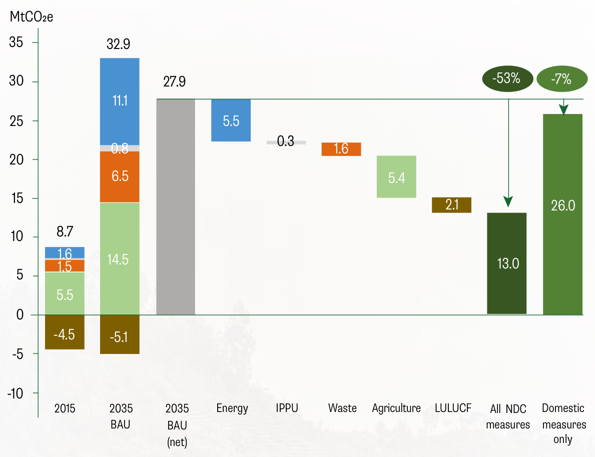
2015 |
2020 |
2025 |
2030 |
2035 |
|
Total net emissions (million tCO2e/yr) |
|||||
BAU reference case |
4.15 |
7.50 |
12.45 |
18.80 |
27.86 |
Unconditional measures |
4.15 |
7.39 |
11.82 |
17.51 |
26.02 |
All NDC measures |
4.15 |
6.47 |
9.38 |
10.93 |
13.00 |
GHG reduction relative to BAU (million tCO2e/yr) |
|||||
Unconditional measures |
- |
0.12 |
0.63 |
1.29 |
1.84 |
Conditional measures |
- |
0.92 |
2.44 |
6.57 |
13.02 |
All NDC measures |
- |
1.04 |
3.08 |
7.86 |
14.86 |
GHG reduction relative to BAU (%) |
|||||
Unconditional measures |
- |
2% |
5% |
7% |
7% |
Conditional measures |
- |
12% |
20% |
35% |
46% |
All NDC measures |
- |
14% |
25% |
42% |
53% |
In response to the growing challenges of climate change, Rwanda has established a comprehensive and robust legal, policy, and strategic framework which prioritizes adaptation across eight key sectors: agriculture, water resources, land and forestry, human settlements, health, transport, mining, and cross-sectoral activities. This sectoral approach has been consistently adopted in strategic documents, including the revised GGCRS and the sector strategic plans related to agriculture, urbanization and human settlement, transport, and water and sanitation.
Since NDC 2.0, Rwanda has experienced rising climate impacts with rising loss and damage. This includes the impact of the 2023 floods and landslides, which led to 131 fatalities and estimated damages of RWF 518.58 billion (USD 415 million) to recover from the damages and economic losses. Additional information has also emerged on the potential future impacts of climate change to Rwanda, which indicate much higher economic costs than previously identified, and thus greater adaptation needs. This includes the analysis in the World Bank’s Country Climate and Development Report (CCDR) which estimates that without adaptation, climate change could reduce annual GDP by 5-7% below baseline levels by 2050.
Climate change poses a serious threat to Rwanda’s economy and the livelihoods of its people. Additional net economic costs could amount to nearly 1% of GDP each year by 2030 and rise further to 2.5% of GDP by 2050. In agriculture, which employs 54.8% of the workforce, projected climate shifts are expected to reduce the yields of key staple crops by at least 10% under moderate warming scenarios (RCP 4.5) and up to 15% under higher-emission pathways (RCP 8.5) by 2050. These impacts threaten both macroeconomic stability and the food security and incomes of millions of Rwandans. This indicates that Rwanda needs to increase the rate and ambition of adaptation to address rising impacts and higher future risks. The prioritised adaptation measures for each of the eight thematic areas are as follows:
NDC 3.0 aims to accelerate Rwanda’s transition to Integrated Water Resources Management (IWRM). It includes catchment restoration, using terracing and agroforestry, with a target to rehabilitate over one million hectares (ha) of degraded land by 2030. This will reduce run-off and floods risks, and help regulate water flows including dry-season flows.
It also includes increased water storage to enhance water security, as well as improved efficiency of water use. Currently, water quality monitoring covers 51 water bodies; the objective is to expand coverage to 76 water bodies by 2030 and to 101 by 2035. At the same time, flood protection investments will be increased to help protect 40% of high-risk households by 2030 and 60% by 2035. The NDC will also support sustainable expansion of irrigation, with a target to expand the irrigated area from 102,000 ha in 2025 to 200,000 ha by 2030, to support agricultural production and food security from the impacts of rainfall variability.
Rwanda’s drive towards climate-resilient and sustainable agriculture will combine on-farm water security (within the IWRM framework above) with an increase in solar irrigation, combined with climate-resilient seeds and livestock breeds. The increasing impacts of heavy rainfall and soil erosion will be tackled by soil conservation using terracing and agroforestry. Priorities along the value chain have also been identified, with storage and processing hubs utilizing solar dryers and biogas proposed to reduce post-harvest losses. These actions are complemented with a National Agriculture Insurance Scheme for crop and livestock insurance. Taken together, the NDC 3.0 measures can create a resilient and sustainable agri-food system.
First, improved seed adoption is currently at 85.7% and is slated to reach universal uptake (10%) by 2030. At baseline, 33% of farms use climate-resilient seed varieties; the strategy is to increase this share by 5% to 38% of farms by 2030 and to achieve 77% coverage by 2035. Second, at baseline, the national post-harvest storage capacity is 318,025 million tonnes, with average losses of 13.8% on food crops.
The target is to double this capacity to 551,013 million tonnes by 2030, reducing losses to under 8 per cent, and to further expand to 745,168 million tonnes by 2035, at which point losses should fall below 5%. Similarly, crop insurance currently covers 33,269 ha, while livestock insurance covers 48,962 cattle. Coverage will increase to 91,009 ha of crops and 70,754 cattle by 2030, and then scale up to 166,850 ha and 129,716 cattle insured by 2035.
By 2030, the NDC 3.0 sets a target that all districts will implement hazard-informed land use plans through a national spatial-data infrastructure, steering development away from flood and landslide prone zones. Payment for Ecosystem Services schemes will reward communities and will restore over 40,000 ha of forests by 2030 and nearly 70,000 ha by 2035, while agroforestry plantings are planned to exceed one million ha by 2030, collectively reducing flood intensity and sustaining river baseflows.
Rwanda’s urban adaptation priorities in NDC 3.0 are to transform informal settlements and hazard-prone neighbourhoods into planned, climate-resilient communities by integrating stormwater management into city master plans, and by expanding green and blue infrastructure. This will be measured by progress indicators, including the share of the population in risk-informed settlements and urban green space per capita. At baseline, 60% of Kigali’s residents live in unplanned settlements, but NDC 3.0 aims to reduce this to 51.2% by 2030 and to 44% by 2035.
Meanwhile, rural households in integrated, planned communities will increase from 65.4% today to 84.2% by 2030 and to full coverage (100%) by 2035. By 2030, every urban land parcel will be governed by risk-informed physical plans, and public green and open spaces will grow from 19.8% to 30% of built-up areas, with progress tracked through surveys, satellite land-use data, and regular agency reporting.
Frequent floods and droughts threaten Rwanda’s progress toward universal Water, Sanitation And Hygiene (WASH) access, diverting funds to repairs rather than expansion. NDC 3.0 aims to provide access to universal and climate-resilient water supply services, with all villages receiving improved water supply and solar-powered water treatment facilities by 2030, doubling capacity and halving non-revenue water losses.
The target is to achieve universal sanitation coverage by 2030 and to climateproof all sewerage infrastructure in flood- and landslide-prone areas against those hazards., especially in high-risk zones, low-lying floodplains, unstable hillsides and informal settlements which are most vulnerable to sewer failures during extreme rains or landslides. Climate-proofing these areas first prevents service breakdowns that would divert funds into emergency repairs. Once these hotspots are secured, broader urban expansion can proceed on a stable, resilient foundation.
NDC 3.0 addresses the growing risks of climate change to vector-borne diseases and maternal and neonatal health. The real-time Meteo-Rwanda alerts, expanded EMR, and mobile surveillance will reduce malaria incidence from 76 to 41.4 cases per 1,000 by 2030; cut maternal mortality from 105 to 60 per 100,000 live births by 2030 (50 by 2035); and lower NCD mortality among 30–70 year-olds from 20% to 8% by 2030 (5% by 2035). EMR coverage will increase from 12% to 70% by 2030 (90% by 2035). All clinics will be climate-proofed, and community risk-reduction programmes will be rolled out.
Under NDC 3.0, primary road corridors will be climate-proofed through slope stabilization, raised embankments, and enhanced drainage systems. This will reduce the length of roads vulnerable to landslides from 67,683 km today to just 384 km by 2030. Concurrently, the modal share of public transport will increase from 21% of all trips at baseline to 23% by 2030 and 24% by 2035, supported by climate-smart bus routes and resilient urban transit corridors.
Rather than viewing mining as a vulnerable sector to climate risks, NDC 3.0 positions it as a resilience partner, with the ambition that 90% of operations will adopt climate-compatible practices, such as water-efficient processing and dry-stack tailings, by 2030. Abandoned sites will be filled in and replanted with native trees to create vegetated areas that improve stormwater absorption and support biodiversity. Mandatory flood-impact assessments will ensure these rehabilitated sites remain pollutant-free during extreme weather events.
NDC 3.0 will deliver multi-hazard early warning to provide real-time meteorological, hydrological, and seismic data to all 30 district command posts. District climate hubs will be established, staffed with GIS and disaster risk reduction specialists, while adaptation will be embedded in every sector master plan. Rwanda’s NDC 3.0 includes a clear results-based framework and financial needs assessment for the adaptation priorities. This includes quantified targets, a criteria-based evaluation of priority interventions, and the development of a Monitoring, Evaluation, and Learning (MEL) framework.
The observed trends of national climate change impacts indicate that Rwanda’s residual impacts, Loss & Damage (L&D), are growing faster than international mitigation and domestic adaptation measures can address. Without a dedicated policy response, these impacts will exceed both the “soft limits” (where options may exist but are currently not available) and “hard limits” (where no adaptive actions are possible to avoid intolerable risks).
To bridge the gap, Rwanda has included a loss and damage response mechanism with the aim to align with emerging international mechanisms - such as the Fund for Responding to Loss and Damage (FRLD), the Warsaw International Mechanism and support from the Santiago Network. By integrating these frameworks into a coherent national strategy, Rwanda seeks to build capacity and mobilise finance to address unavoidable climate impacts. This updated NDC quantifies for the first time the current and projected magnitude of slow-onset and extreme weather events in Rwanda, reviews institutional and policy responses, and proposes interventions, indicators, and targets. The NDC 3.0 identifies the following priority interventions to strengthen Rwanda’s L&D response:
1. Loss and Damage Financing: Rwanda aims to position itself to effectively access resources from the Fund to Respond to the Loss and Damage through the Rwanda Green Fund. This will be achieved by actively engaging in global climate negotiations, enhancing national readiness, and identifying strategic pathways for developing high-quality proposals. These proposals will be aligned with the emerging access modalities for climate-related loss and damage financing, ensuring that Rwanda can mobilize timely and impactful support for vulnerable communities.
2. Real-Time NDIMS Upgrade: The National Disaster Information Management System (NDIMS) currently logs hazards within 24 hours. By 2030, NDIMS will become a GIS-enabled, AI/ML-driven early-warning platform that ingests and displays reports in ≤ 6 hours, with full interactivity and countrywide sensor links.
3. Santiago Network Technical Assistance: At present, Rwanda has no Santiago Network support; through a USD 4.7 million partnership, it will co-develop a Technical Assistance Roadmap by December 2030, piloting it via five to ten cross-sector capacity-building workshops and initial risk assessments, and fully operationalise that support by 2035. Progress will be measured by the number of workshops delivered and assessments completed, in alignment with SDG 17 on global partnerships and Sendai Framework Priority 1 on understanding disaster risk.
4. Integrated L&D Risk Database: Leveraging the Cabinet’s data-sharing policy of 26 May 2025, a unified L&D risk database will be established by 2030 to consolidate data from MINEMA, MINALOC, REMA, Meteo-Rwanda, and NISR. By 2035, this database will facilitate real-time integration, produce automated quarterly reports, and achieve a 50% improvement in assessment accuracy.
The national MRV framework has been revised and updated to be consistent with emerging international requirements, allowing Rwanda to more effectively track progress of its mitigation and adaptation measures consistent with the Paris Agreement’s ETF and relevant international monitoring and reporting guidelines. This NDC 3.0 describes the institutional arrangements used to collect, manage and report on data and implementation.
In order to fully implement the mitigation and adaptation measures contained in this NDC, Rwanda will require significant support in the form of finance, capacity building, and technology transfer. Despite achievements in leveraging climate finance over the past decade and more, a significant scaling up of finance will be needed to implement the measures included in the NDC 3.0.
As part of the NDC preparation process, extensive analysis and consultations with sector experts were undertaken to produce conditional and unconditional cost estimates for the mitigation and adaptation measures through 2030 and 2035.
The total estimated cost for Rwanda’s identified NDC mitigation measures through 2035 is estimated at around USD 5 billion, and around USD 7 billion for adaptation priorities, representing a combined funding requirement of around USD 12 billion (Table ES-2).
USD million |
2025-2030 |
2030-2035 |
Total (2025-2035) |
Mitigation measures |
|||
Unconditional |
242 |
278 |
520 |
Conditional |
2,251 |
2,190 |
4,441 |
Total |
2,493 |
2,467 |
4,960 |
Adaptation measures |
|||
Unconditional |
1,091 |
528 |
1,618 |
Conditional |
3,402 |
2,051 |
5,453 |
Total |
4,492 |
2,579 |
7,071 |
Combined total |
6,986 |
5,046 |
12,032 |
Rwanda’s strategic priorities for climate finance to implement NDC 3.0 build upon institutional reforms and strategic investments initiated during the implementation of NDC 2.0. Key structural shifts, such as the adoption of the Climate and Nature Finance Strategy (CNFS), the development of the Rwandan Green Taxonomy, and the nationwide rollout of Climate Budget Tagging (CBT), have been instrumental in aligning financial flows with national climate priorities.
Rwanda has defined five strategic priorities for climate finance implementation which are Domestic Fiscal Leverage, Blended Finance Vehicles, Capital and Carbon Markets, International Access and Guarantees, Governance and Transparency.
As described above, Rwanda’s NDC 3.0 targets for both mitigation and adaptation comprise of unconditional and conditional components. Unconditional components shall be funded through domestic sources of finance, paid for through a combination of direct government spending, consumer levies and payments, business levies, or mandated or incentivised through domestic climate-related policies and measures etc. Conditional components shall be funded by attracting international sources of finance. This could take several forms including grants and philanthropy, market-based mechanisms, and other types of international funding mechanisms.
The Republic of Rwanda submitted its first updated and revised NDC (NDC 2.0) to the United Nations Framework Convention on Climate Change (UNFCCC) Secretariat in May 2020. As required under the Paris Agreement, Rwanda is now pleased to submit this updated and enhanced NDC (NDC 3.0).
The Paris Agreement requires Parties’ updated contributions to be informed by the outcome of the first Global Stocktake (GST) which concluded in 2023 and assessed collective progress toward meeting the goals of the Paris Agreement. The GST found that Global Greenhouse Gas (GHG) reduction pathways were not aligned with the Paris Agreement and therefore encouraged Parties to come forward in their next NDCs with “ambitious, economy-wide emission reduction targets, covering all greenhouse gases, sectors and categories and aligned with limiting global warming to 1.5 °C, as informed by the latest science, in the light of different national circumstances”.
Responding to this request, Rwanda has now expanded the scope of its NDC to be economy-wide, including all GHGs and sectors included in its national greenhouse gas inventory. Previously excluded from NDC 2.0, emissions and removals from Land Use, Land Use Change and Forestry (LULUCF) have now been included within the NDC 3.0 mitigation contribution. As encouraged under the international framework, this updated NDC (NDC 3.0) now incorporates an end date of 2035.
This document describes how Rwanda’s contributions have been updated and enhanced compared to the previous NDC 2.0. It also provides specific information on how the updated NDC responds to, and has been informed by the first GST.
The mitigation and adaptation contributions described in this submission build upon NDC 2.0, reflecting changes in national circumstances, new policies and plans, and recent work in developing quantifiable mitigation and adaptation targets. The updated NDC 3.0 has been informed by in-depth analysis using latest data and information and an extensive national stakeholder-driven consultation process.
The Government of Rwanda is committed to taking urgent action to mitigate and adapt to the effects of climate change. As a Party to the UNFCCC, the country seeks to contribute to the ambitious goal of limiting temperature rise to 2ºC with efforts to reach 1.5ºC agreed under the Paris Agreement. Rwanda’s vision for climate change is to achieve a just, inclusive, low-carbon and climate-resilient green economy that supports high-value job creation, sustainable urbanization, biodiversity conservation, and low-carbon industrialization. This ambition is fully aligned with Vision 2050, which aspires for Rwanda to become an upper-middle-income country by 2035 and a high-income country by 2050 through a green, inclusive development model.
Building on key national policies such as the Revised Green Growth and Climate Resilience Strategy (GGCRS) and the Second National Strategy for Transformation (NST2), this NDC 3.0 articulates a coherent, economy-wide approach to climate adaptation and mitigation. To support this ambition, Rwanda’s Climate and Nature Finance Strategy (CNFS) establishes an integrated financing architecture that bridges climate and biodiversity priorities. The CNFS outlines mechanisms to unlock both public and private capital while promoting nature-based solutions and equitable benefit-sharing. This integrated model ensures that resource mobilisation under the CNFS is not only aligned with Rwanda’s climate targets but also embedded within a results-driven NDC implementation framework.
Despite having one of the lowest per capita emissions rates worldwide, Rwanda believes in playing its part towards achieving the goals of the UNFCCC and the Paris Agreement. This updated NDC therefore proposes an ambitious and wide-ranging set of measures which can significantly reduce the country’s GHG emissions compared to a Business-As-Usual (BAU) scenario of economic development and emissions growth over the next decade. The mitigation and adaptation contributions set out in this document are therefore considered to be both fair and ambitious in the context of Rwanda’s national circumstances.
This section provides a brief overview of Rwanda’s national circumstances, including the country’s geographic profile and exposure to climate change impacts, natural resources and key socio-economic characteristics.
Rwanda is a country located in the east of central Africa and covers an area of 26,338 km2. It lies approximately at 120 km south of the equator, and is bordered by Uganda at the North, Tanzania at the East, Burundi at the South and the Democratic Republic of Congo at the West (GoR, 2018). The altitude varies between 900 m and 4,507 m from east to west where eastern plains lay between 1,000 m to 1,500 m and the central plateau region between 1,500 m and 2,000 m (Sirven et al, 1974; MINIRENA, 2010).
As with many countries worldwide, Rwanda is experiencing significant climate change impacts. Rainfall patterns have shifted, with rainy seasons becoming shorter but more intense, a trend most pronounced in the Northern and Western provinces (World Bank, 2021). Heavy downpours and more erratic precipitation are increasingly frequent. At the same time, temperatures have risen markedly. Rwanda’s national average temperature has increased by roughly 1.4°C since 19701, which is higher than the global average (GoR, 2025). Some regions have experienced even greater warming, in the order of 2°C or more over the past years (GoR, 2024a).
These changes in rainfall and temperature are driving more frequent climate-related disasters across the country. The main hazards include droughts, floods, landslides, storms (often manifesting as severe windstorms and lightning storms), and episodes of extreme heat (GoR, 2024a). Such events are causing serious damages, destroying crops and infrastructure, eroding soils, contaminating water supplies, and tragically costing lives.
Rwanda’s government emphasizes that climate change is already negatively affecting the country’s economy and livelihood (GoR, 2024a). Continued warming is projected across Rwanda, along with further shifts in rainfall. Climate models indicate that Rwanda’s mean annual temperature will keep rising under all RCP4.5 and RCP8.5 scenarios. By mid-century (around 2050), average temperatures are expected to be 1.5–2.5ºC higher than recent historical levels (GoR, 2024; WBG, 2021). In addition, extreme rainfall events in Rwanda are expected to become more frequent and intense, while annual rainfall is projected to decrease in most regions (Ndakize, J. S, et al, 2025).
There are strong regional disparities in how climate change is impacting Rwanda’s rainfall and extreme weather, and these differences are expected to widen. The Eastern and South-Eastern parts of Rwanda (which are already the driest areas of the country) are projected to face worsening drought conditions. These lowland districts, for example, Nyagatare, Kayonza, Kirehe, Bugesera and neighbouring areas, frequently suffer from rainfall deficits, and climate projections show they will experience more frequent and severe droughts as the climate warms (World Bank, 2021). Prolonged dry seasons and higher temperatures in this region will further stress crops and water resources, potentially exacerbating food security issues. In contrast, the Northern and Western highlands (including the volcanoes region and Nyungwe forest region) are expected to see increases in heavy rainfall. These mountainous zones, which already receive the most rain, could get even more extreme rainfall during the wet seasons (GoR, 2024a; World Bank, 2021).
Rwanda is therefore recognised as a country that is highly vulnerable to climate change. The country’s National Risk Atlas (MIDIMAR, 2015) identifies droughts, floods, landslides, and windstorms as the most severe natural hazards nationwide. Recent climate transparency reports reaffirm that Rwanda remains extremely prone to climate-related hazards like flooding and drought, which threaten lives, livelihoods and critical infrastructure (GoR, 2024a).
Rwanda’s total arable land is estimated at 14,000 km2 or 52% of the country’s total surface area (26,338 km2). However, in 2014 the total cultivated area increased to 1,747,559 ha or 66% of the national territory. This means that some mountainous and protected areas have progressively been cultivated, exposing the country to more climate change and climate variability impacts (GoR, 2018). Furthermore, farm ownership per household has decreased significantly, from 1.2 ha in 1984 to 0.89 ha in 1990 and 0.6 ha in 2010 (GoR, 2018). These smaller plots are overexploited, leading to degradation and a decrease in soil fertility (GoR, 2018).
Rwanda’s hydrographic system is split into two basins divided by the Congo-Nile ridge, with water systems to the west of the ridge flowing into the Congo basin, and those to the east of ridge flowing into the Nile basin.
The country’s hydrologic network covers 8% of the national territory, equivalent to about 2,143 km2, on which 101 lakes cover around 1,300 km2 (RNRA, 2015), 861 rivers occupy about 72.6 km2 while the water of 860 wetlands and valleys covers 770 km2 (Sirven et al, 1974; REMA, 2009; MINIRENA, 2012). The Congo basin drains around 33% of the national territory with around 10% of the country’s water. The Nile basin drains around 67% of the national territory, with 90% of the country’s water (Sirven et al, 1974).
Rwanda’s territory is covered with diverse ecosystems which include natural ecosystems (mountain rainforests, gallery forests, savannah woodland, wetlands and aquatic forests), forested area and agro-ecosystems. Nationally protected areas are mainly represented by the four national parks: Volcanoes National Park, Nyungwe National Park, Akagera National Park and Gishwati-Mukura National Park. Unfortunately, Rwanda’s protected areas have lost around 50% of their original surface area over the last 40 years. There are also small reserve forests including Busaga, Buhanga, Sanza, Iwawa, Rubirizi, Makera, and a number of public and private plantation forests.
Rwanda’s wetlands comprise marshlands, lakes, rivers and streams and represent around 15% of the national territory (of which 6.3% are marshlands and 8.6% are lakes and streams). Total wetlands cover an area of 276,477 ha of which 74% is classified as conditionally exploited, 6% unconditionally exploited, and 20% fully protected. Wetlands are dominated by papyruses, especially in the Kamiranzovu, Gishoma and Rugezi marshlands and around lakes such as Muhazi, Burera and Ruhondo. Plantation forests are distributed throughout the country and dominated by exotic species such as Eucalyptus, Pinus, and Grevillea.
Rwanda has experienced rapid socio-economic and demographic transformation since 2000. Official data show that real Gross Domestic Product (GDP) grew at an average rate of around 7.4% per year between 2000 and 2023, reflecting one of the fastest sustained growth rates in the world (World Bank, 2024). This growth has more than doubled the size of the economy: for example, GDP at constant 2017 prices expanded from approximately RWF 3.88 trillion in 2007 to 12,48 trillion in 2024, despite a brief pandemic-related contraction in 2020 (NISR, 2025a).
For the year 2024, Rwanda’s working-age population (16 years and above) was estimated at about 8.3 million people (NISR, 2024a), with females accounting for slightly over half of this total. According to the Fifth Population and Housing Census of 2022, Rwanda’s population reached 13.25 million people in 2022, up from 11.2 million in 2015 and 8.13 million in 2002. This represents an average growth rate of about 2.3% per year during 2012–2022 (NISR, 2023a). Rwanda remains predominantly rural, with about 72.1% of the population living in rural areas and 27.9% in urban areas as of 2022.
The City of Kigali is by far the largest urban agglomeration, being the most urbanized province (around 87% urban; NISR, 2023a). Rwanda’s population is projected to continue growing significantly. Recent projections (medium scenario) anticipate the total population could exceed 14 million by 2025 and reach roughly 16–17 million by 2030–2035, given current growth trends (Table 2.1). This expected growth, alongside a gradual increase in the urbanization rate, will have important implications for development planning (e.g. housing, services and infrastructure needs in cities, and land pressure in rural areas).
Population (million) |
2015 |
2020 |
2025 |
2030 |
2035 |
Urban |
2.08 |
2.77 |
4.52 |
6.15 |
7.92 |
Rural |
9.18 |
9.89 |
9.58 |
9.58 |
9.58 |
Total |
11.26 |
12.66 |
14.10 |
15.73 |
17.49 |
Source: Adapted from NISR, 2023a and NISR, 2023b
Rwanda’s policies for addressing poverty, most notably the Second National Strategy for Transformation (NST2 2024–2029) and Vision 2050 (GoR, 2020b), continue to prioritize poverty reduction through inclusive growth, social protection, and human capital investments. According to the Seventh Integrated Household Living Conditions Survey (EICV7), the national poverty rate fell from 38.2 % in 2017 to 27.4 % in 2024, lifting approximately 1.4 million Rwandans out of poverty (NISR, 2025b).
Rwanda’s agriculture sector remains a cornerstone of its economy, engaging approximately 69% of households. To enhance this sector, the government launched the Fifth Strategic Plan for Agriculture Transformation (PSTA5) for the period 2024–2029. PSTA5 aims to build resilient and sustainable agri-food systems by modernizing agricultural practices, increasing productivity, and promoting inclusive markets. The strategy targets an average annual agricultural growth rate of 6.5%, an increase in export revenues to USD 1.54 billion, and the creation of over 644,000 off-farm jobs in agri-food systems.
It also emphasizes empowering women, with a goal of 72% female participation in agriculture, and improving food and nutrition security nationwide (MINAGRI, 2024). NST2 prioritizes economic transformation, aiming to elevate Rwanda to upper-middle-income status by 2035. Within this framework, agriculture is expected to grow by more than 6% annually, contributing significantly to national food security, employment generation, and poverty reduction. NST2 also focuses on creating 2.5 million productive and decent job opportunities over five years, enhancing climate resilience, and improving public service delivery (GoR, 2024b).
Rwanda’s services and tourism sector is also a significant driver of economic growth. In the fiscal year 2023/24, the services sector contributed 46% to the national GDP, reflecting its pivotal role in the economy (NISR, 2024b). Tourism, a key component of the services sector, has shown remarkable resilience and growth. In 2023, Rwanda’s tourism revenue reached USD 620 million, marking a 36% increase from the previous year (Rwanda Economic Journal, 2024). This growth is attributed to strategic initiatives under the First National Strategy for Transformation (NST1) and Vision 2050, which emphasize the development of high-end tourism and the promotion of Rwanda as a premier travel destination.
Rwanda’s trade and industry sector has also experienced significant growth, driven by strategic national initiatives outlined in the NST2 and the Private Sector Development and Youth Employment Sector Strategic Plan (PSDYE SSP) 2024–2029. As of the third quarter of 2024, Rwanda’s total trade reached USD 2.98 billion, marking a 41% increase compared to the previous year. Domestic exports accounted for USD 653.85 million, imports stood at USD 2.14 billion, and re-exports contributed USD 184.59 million (NISR, 2024b). This positive trend aligns with NST2’s goal of boosting exports, enhancing domestic production, and reducing the national trade deficit.
Rwanda’s NDC3.0 integrates key cross-cutting themes to ensure inclusivity, sustainability, and alignment with national priorities and global climate commitments. These themes were embedded in technical design, stakeholder engagement, and action prioritization to enhance resilience and low-carbon development while addressing social, economic, and environmental challenges.
To mainstream gender and social inclusion in NDC 3.0, a Gender Equality and Social Inclusion (GESI) Index and Simulation Tool has been developed. The consultations through participatory processes with insights from women, youth, civil society, and local governments were conducted to align each NDC 3.0 intervention with gender and social inclusion to ensure NDC implementation will respond to the needs of gender and be inclusive.
Women remain largely involved in subsistence agriculture or informal, low-income activities, and NDC 3.0 interventions such as irrigation, agro-processing and green jobs may bypass them unless deliberately designed to include them. In addition, low female participation in infrastructure-linked sectors means women are less likely to influence or benefit from NDC-related infrastructure projects (e.g., electric vehicle rollout, road rehabilitation for climate adaptation). The GESI inclusion in NDC 3.0 will help to address these key issues.
Climate change also exacerbates challenges in Sexual And Reproductive Health and Rights (SRHR) and increases Gender-Based Violence (GBV). Rwanda plans to establish a Climate-Health Coordination Platform, integrate early-warning and GBV risk protocols into climate planning, and launch a clean-institutional cooking framework to reduce emissions and gendered health risks, ensuring a rights-based, inclusive approach to sustainable development.
As of 2022, children made up nearly half of Rwanda’s population, with about 46% under 18 years of age making them highly vulnerable to climate risks and climate-sensitive diseases. To address these challenges, this NDC recognises children and youth as core stakeholders. During implementation, emphasis will be put on integrating climate education across all school levels, institutionalizing youth participation in policy design, ensuring climate-resilient school infrastructure and health systems, and scaling youth-led adaptation projects.
Rwanda commits to engage children and youth in climate awareness programs, relocating schools from high-risk zones, increasing adoption of clean cooking in schools, and expanding youth-driven climate innovations. These efforts aim to safeguard Rwanda’s youngest citizens, ensuring an inclusive and future-focused approach to climate resilience.
As climate change impacts are increasing, it might cause temporal or permanent movement of people who leave their habitual place of residence. To prevent climate related human mobility, NDC 3.0 integrated expansion of early warning coverage for climate-related disasters, establishing inclusive evacuation shelters for vulnerable populations, developing national emergency response guidelines for climate risks, and facilitating dignified voluntary relocation from high-risk areas. These efforts ensure Rwanda’s climate strategies remain inclusive, mobility-aware, and resilience-focused, directly supporting NDC 3.0 implementation.
Short-Lived Climate Pollutants (SLCPs) and air pollution identified as the leading global environmental health risk. The SLCPs are group of GHGs and air pollutants that have a strong warming effect on the climate in the near term and harm public health. These pollutants, such as black carbon, methane, tropospheric ozone, and some hydrofluorocarbons (HFCs), can be mitigated to significantly reduce near-term global warming and the impacts on health. In Rwanda, key pollution sources include agriculture and livestock, traffic emissions, domestic fuel use, refrigeration and air conditioning leading to elevated concentrations of SLCPs.
To address these challenges, Rwanda’s NDC 3.0 mitigation component prioritizes reduction of SLCPs and air quality improvement through vehicle emissions standards, regulate imports and enhance traffic management, adoption of efficient cookstoves to reduce emissions from traditional cooking methods, reduction of enteric fermentation and improved manure management, reduction of HFCs emissions under refrigeration and air conditioning measures, improved solid waste and waste water treatment, and national air quality monitoring systems to track air pollutant levels. By integrating SLCPs and air quality management with climate action, Rwanda aims to curb short-term warming, protect public health, and advance sustainable development.
Rwanda has made significant strides in advancing climate resilience, focusing on agriculture, disaster risk reduction, and social protection. Disaster preparedness and risk reduction remains a priority crosscutting area within this NDC. This includes shock-responsive social protection, scaling early warning systems, and integration of anticipatory financing into disaster risk management frameworks. These strategic priorities align with Rwanda’s climate and development goals, and ensuring overall management of climate extremes.
Rwanda is integrating social inclusion, green growth, and climate resilience into its NDC 3.0. With 84% of the workforce in informal, climate-sensitive sectors mainly agriculture and small enterprises, many lack social protection, making them highly vulnerable to climate shocks. Climate change threatens key sectors like energy, transport, and agriculture, risking job losses and widening inequality unless addressed through inclusive NDC 3.0 interventions.
To address these challenges, under NDC 3.0 Rwanda has prioritized supporting informal biomass workers in energy transitions, empowering smallholder farmers to enhance climate resilience, expanding inclusive public transport for sustainable mobility, and creating restoration jobs in forestry and land-use management. In addition, the monitoring of green jobs will be monitored under each intervention in the NDC 3.0.
The Republic of Rwanda submitted its first updated NDC in May 2020 (NDC 2.0) outlining its mitigation and adaptation contributions. As required by the five-yearly timeline established by the Paris Agreement, Rwanda is now submitting its updated NDC (NDC 3.0). This now incorporates an end date of 2035, as encouraged under the international framework (Decision 6/CMA.3). 2023 saw the conclusion of the first Global Stocktake (GST) which assessed collective progress toward meeting the goals of the Paris Agreement (UNFCCC, 2023). The Paris Agreement requires Parties’ updated contributions to be informed by the outcome of this process (Article 4.9).
The GST concluded that global GHG reduction pathways were not aligned with the Paris Agreement and therefore encouraged Parties to come forward in their next NDCs with “ambitious, economy-wide emission reduction targets, covering all greenhouse gases, sectors and categories and aligned with limiting global warming to 1.5 °C, as informed by the latest science, in the light of different national circumstances” (Paragraph 39). Responding to this request, Rwanda has now expanded the scope of its NDC to be economy-wide, including all GHG gases and sectors included in its national GHG inventory. Previously excluded from NDC 2.0, emissions and removals from Land Use, Land Use Change and Forestry (LULUCF) have now been included within the NDC 3.0 mitigation contribution.
The GST also reiterated the Paris Agreement requirement for each Party’s successive NDC to “represent a progression beyond the Party’s then current nationally determined contribution and reflect its highest possible ambition, reflecting its common but differentiated responsibilities and respective capabilities, in the light of different national circumstances” (Article 4.3).
This section summarizes the national NDC revision process undertaken to develop Rwanda’s NDC 3.0 and describes how the contributions have been updated and enhanced compared to the previous NDC 2.0. It also provides specific information on how the updated NDC responds to, and has been informed by, the first GST.
The section first sets out some key lessons learned and challenges from NDC 2.0 implementation and how Rwanda plans to address them through the NDC 3.0 timeframe.
In order to strengthen its climate policy effectiveness, Rwanda seeks to learn from previous NDCs as it revises and updates each successive contribution. Implementation of NDC 2.0 highlighted several challenges, including the following:
Subnational capacity constraints: District-level institutions lacked technical expertise and resources for climate planning and implementation.
Limited stakeholder engagement: Limited involvement of civil society, private sector, and local communities.
MRV operationalization challenges: Constraints in operationalizing the MRV framework, including aligning specific NDC implementation indicators with those used across sectors, hindered tracking and impact assessment of NDC measures.
To help address these challenges, Rwanda has implemented a better coordinated and integrated institutional framework, with clearly defined roles for key organisations as follows:
Ministry of Environment (MoE) oversees the policy alignment and the coordination of institutions in charge of Environment and Natural Resources Sector in Rwanda.
Rwanda Environment Management Authority (REMA) leads environmental protection, ensures compliance with environmental law and policy, and advises the government on all matters related to climate change mitigation and adaptation.
Ministry of Finance and Economic Planning (MINECOFIN) coordinates the preparation and implementation of the National Budget and ensures climate integration in budgeting.
Rwanda Green Fund (RGF) mobilizes climate financial resources and manages climate finance instruments such as Ireme Invest and Intego.
Ministry of Local Government (MINALOC) ensures district-level coordination and capacity-building for climate action.
These roles and responsibilities are further described in subsequent sections of this document. To strengthening coordination across all areas of government and undertake relevant policy reforms to enhance NDC3.0 implementation, Rwanda is prioritizing the following activities.
Developing clearer institutional mandates: Eliminating overlaps and fostering inter-agency collaboration.
Building capacity at Local Levels: Investing in training and resources for districts.
Ensuring robust stakeholder engagement: Strengthening participation of civil society and private sector.
Developing a comprehensive national MRV System: Developing a more effective MRV framework of indicators and arrangements for data collection and management, and accurate NDC tracking and policy refinement.
Integrating climate policy within Rwanda’s legal framework: Embedding climate objectives into national regulations.
In addition, a report on NDC 2.0 implementation has been produced by Citepa, providing a detailed sectoral assessment of progress with the mitigation and adaptation components of NDC 2.0 over the period 2015-2024 (Citepa, 2025). The report’s findings indicate good progress in certain sectors, notably within sustainable agriculture and renewable electricity generation, but a lack of progress in other sectors such as waste and IPPU. The report indicates a need for Rwanda to further strengthen and coordinate its climate policy efforts, including through its MRV system, and mobilise climate finance.
As required by the Paris Agreement, and in response to the first GST, Rwanda’s NDC 3.0 is now expanded to include all emissions sources and sinks. The NDC 3.0 has been updated since the previous NDC according to three key aspects:
1. National GHG inventory data: Revision and improvement of the national GHG inventory based on updated IPCC guidelines and improved national data, including for the NDC base year.
2. BAU baseline projections: Revision and update of the BAU baseline projections, using more recent data, sectoral analysis and projections and extended to 2035.
3. Mitigation analysis and contribution: Revised estimate of the technical mitigation potential and NDC contribution from policies and measures to 2035.
The national GHG inventory has undergone extensive revision and improvement since the development of NDC 2.0. As documented in Rwanda’s recently published first Biennial Transparency Report (BTR 1; GoR, 2024a), estimated emissions across a number of reporting categories have been revised applying the methodologies contained in the 2019 Refinement to the 2006 IPCC Guidelines for National Greenhouse Gas Inventories (IPCC, 2019). The Global Warming Potential (GWP) values applied to the calculation of each GHG were also updated based on the IPCC’s Fifth Assessment Report (AR5; IPCC, 2014) which provides higher GWP values for methane emissions which accounts for a large share of GHG emissions within Rwanda.
In parallel, the national GHG inventory has been strengthened since NDC 2.0 through the availability of additional and improved datasets across several reporting categories. These have been most significant within the Agriculture and Waste categories, which have seen estimated emissions in 2015 increase significantly from 2.94 million tCO2e to 5.51 million tCO2e, and 0.64 million tCO2e to 1.53 million tCO2e, respectively. Particular increases include estimated emissions from livestock (category 3.A), solid waste disposal (category 4.A.) and wastewater treatment and discharge (category 4.D), the latter two categories seeing the recent application of higher per capita waste generation values.
Additional emissions and removals sources, previously not included within the inventory, were also calculated most significantly the addition of category 3.D.1. (Harvested Wood Products) and several sub-categories falling within category3.C. (Aggregate Sources and Non-CO2 Emissions Sources on Land). A number of improvements and updates were also made within the Energy fuel combustion category (Category 1.A) based on refined and additional activity data, for example, relating to registered road vehicles and their classification. Some minor adjustments and corrections were also made to the national GHG inventory, updating the emissions reported in the BTR1, as part of the NDC development process.
Together, these refinements and updates to Rwanda’s GHG inventory have resulted in a revised estimate of base year emissions increasing from 5.33 million tCO2e (NDC 2.0) to 8.7 tCO2. This updated estimate is considered more accurate, and aligned with latest IPCC guidance, and has therefore been used within NDC 3.0.
Rwanda has chosen to adopt a BAU baseline reference projected from 2015 to 2035 against which to quantify its estimated mitigation contribution. The baseline represents a counter-factual scenario which excludes the mitigation policies and measures (PaMs) which are instead attributed to the NDC scenario. The baseline takes the form of a dynamic baseline which is periodically updated and communicated within each successive NDC. Periodically updating the reference points in the BAU baseline is considered important as it ensures the reference against which commitments are being made reflects latest scientific data and any socio-economic changes.
Updated BAU baseline projections have therefore been developed in light of more recent and accurate information and, as requested under the Paris Agreement framework, extended to 2035. These have been developed based on the revised base year GHG emissions estimates and also updated key socio-economic drivers of emissions such as gross domestic product (GDP) forecasts, population growth outlook, revised power generation expansion plans, sectoral targets etc. The BAU projections have been developed using a combination of the Low Emissions Analysis Platform (LEAP; Heaps, C.G., 2022), IPCC software, and Excel-based modelling.
The combination of updated and increased base year emissions and the various updated forecasts and outlooks driving sector emissions which now more accurately reflect Rwanda’s changing circumstances has resulted in a higher BAU reference projection of national GHG emissions as compared to NDC 2.0 over the same period. These updated reference points are considered to enhance the transparency of Rwanda’s NDC, demonstrating both a commitment to accuracy and heightened ambition.
As described above, Rwanda has updated its mitigation contribution based on an updated identification and analysis of proposed policies and measures. The resulting mitigation estimates and overall contributions through 2035 are set out in the next section of this document (Section 5).
This updated NDC extends its scope to include economy-wide emissions reduction targets covering all GHGs, sectors, and categories as requested under the Paris Agreement. For purposes of transparency however, this NDC distinguishes between emissions reduction targets and emissions removal targets.
Section 5 sets out range of policies and measures aimed at reducing emissions and/or sequestering carbon (removals) in Rwanda for the period 2015-2035. These cover all of the country’s key emitting sectors and are considered to represent the maximum mitigation potential which can be feasibly achieved within the country over the coming decade, subject to the provision of international support. Many of these measures, such as the expansion of EVs and the scaling up of hydropower represent significant implementation and policy challenges often requiring changes in consumer behaviour. Their planned implementation through government policy, regulation and various supporting activities is summarised at the end of Section 5.
Rwanda’s revised mitigation contribution has also been informed by the outcome of the first GST. This calls on Parties to contribute to the following global efforts, inter alia, in a nationally determined manner, taking into account the Paris Agreement and their different national circumstances, pathways and approaches (UNFCCC, 2023):
Tripling renewable energy capacity globally and doubling the global average annual rate of energy efficiency improvements by 2030;
Accelerating efforts globally towards net zero emission energy systems, utilizing zero- and low-carbon fuels, well before or by around mid-century;
Transitioning away from fossil fuels in energy systems, in a just, orderly and equitable manner, accelerating action in this critical decade, so as to achieve net zero by 2050 in keeping with the science;
Accelerating zero- and low-emission technologies, including, inter alia, renewables, nuclear, abatement and removal technologies such as carbon capture and utilization and storage, particularly in hard-to-abate sectors;
Accelerating and substantially reducing non-carbon-dioxide emissions globally, including in particular methane emissions by 2030;
Accelerating the reduction of emissions from road transport on a range of pathways, including through development of infrastructure and rapid deployment of zero and low-emission vehicles; and
Phasing out inefficient fossil fuel subsidies that do not address energy poverty or just transitions, as soon as possible.
The planned expansion of renewable energy generation from hydropower and solar sources contained in this NDC represents an increase of over five times between the base year and 2030, rising from around 270 GWh to 1,440 GWh. This rate of increase rises even further when extended to 2035. This updated NDC also outlines a significant transition away from imported fossil fuel use, notably HFO and diesel in electricity generation and gasoline and diesel within transport, towards increased use of domestic zero- and low carbon sources. As well as accelerating renewable resources, this NDC also highlights the role for removals including through nature-based removals in the short-to medium term.
The NDC outlines several policies and measures aimed at significantly reducing methane emissions within the agriculture and waste sectors, and sets out plans and targets to accelerate the reduction of emissions from road transport including through increased use of electric vehicles (EVs) using decarbonised grid electricity, investing in measures to shift towards greater use of public and non-motorised transport (NMT). Finally, although Rwanda does continue to subsidise energy production, given its status as a land-locked country with a limited industrial base, this is aimed at ensuring increased access to affordable and clean sources of zero- and low carbon energy to help ensure ongoing development and rising living standards consistent with a Paris-aligned clean energy transition.
As with the BAU emissions projections, the technical analysis and mitigation scenarios have been developed using a combination of LEAP, IPCC software and Excel-based modelling.
The UAE Framework for Global Climate Resilience outlines 11 thematic and process-related targets to be achieved by 2030, emphasizing the need for Parties to elevate their ambitions and make progress on adaptation. In response, and in alignment with the global adaptation goal of the Paris Agreement (Article 7), this NDC presents Rwanda’s updated and revised adaptation actions and targets to address climate change, including extreme weather events and slow-onset changes. It details revised baselines, indicators, and targets for 2030 and 2035, as well as the financial, technical, and capacity-building support needed from the international community.
While the initial selection of adaptation measures was based on priority sectors identified in the previous NDC (NDC 2.0) and confirmed within national policies, programs, and plans, this NDC refines those measures to enhance cross-sector collaboration in planning and implementation. Greater attention has been given to strengthening governance to support the coordinated execution of these measures, which was a significant challenge in delivering the previous NDC.
The updated adaptation component also introduces an enhanced Monitoring, Evaluation, and Learning (MEL) framework, highlighting the critical role of learning in adaptation. This involves analysing collected data and information to inform decision-making, generating knowledge about what has worked, what has not, and determining which adaptation actions have achieved the expected outcomes. This process will also improve tracking and reporting of progress at both national and international levels. The framework closely aligns with the NST2 and the United Nations Sustainable Development Goals (SDGs) through connections to SDG indicators. Further, it includes indicators capable of tracking the integration of gender and vulnerability across sectors.
The adaptation component of this NDC was developed in close coordination with experts and stakeholders from government, civil society, and academia across key sectors. The prioritized adaptation measures and actions identified through this process were paired with a proposed set of indicators to measure and evaluate progress toward targeted outcomes, along with cost estimates. Experts and stakeholders were invited to review and validate these measures, the proposed MEL framework, and the cost estimates. Consequently, changes and additions to the choice of indicators were made and incorporated into the final set of adaptation measures and the associated MEL framework.
Rwanda remains committed to addressing climate change by strengthening its mitigation and adaptation efforts. However, it is increasingly evident that the negative effects of climate change persist despite ambitious mitigation and adaptation initiatives. Hard limits to adaptation have already been reached in some ecosystems, and communities may face limitations in their ability to adapt, leading to displacement, migration, and relocation (IPCC, 2023).
In recent decades, the country has experienced significant climate change, characterized by rising temperatures and shifting rainfall patterns, as well as an increase in the frequency and severity of extreme weather events. These impacts have resulted in growing loss and damage, which are expected to escalate in the future and may exceed both soft and hard limits of adaptation. Consequently, Rwanda is aligning its efforts with the emerging international framework on loss and damage, including the recently established international Fund for Responding to Loss and Damage (FRLD). This updated NDC therefore includes a new section focused on loss and damage. Rwanda will use guidance for tracking loss and damage, as will be defined by the Warsaw International Mechanism (WIM) for Loss and Damage.
Rwanda’s updated mitigation contribution takes the form of a reduction in GHG emissions relative to a BAU emissions baseline over the period 2015-2035. Emissions and removals from LULUCF were not included within NDC 2.0 but has now been included within the scope of the current NDC 3.0. This means that the revised baseline and contributions are now based on Rwanda’s net emissions, accounting for all emission sources and removals included in the national GHG inventory.
The updated contribution, now calculated on the basis of net emissions and including LULUCF, comprises of two components:
Unconditional contribution: A reduction of 7 per cent (%) relative to
BAU in the year 2035; equivalent to an estimated mitigation level of 1.84 million tonnes of carbon dioxide equivalent (tCO2e) in that year. This is an unconditional target, based on domestically supported and implemented mitigation policies and measures.
Conditional contribution: An additional reduction of 46% relative to
BAU in the year 2035; equivalent to an estimated additional mitigation level of 13.02 million tCO2e in that year. This represents an additional contribution, conditional on the provision of international support and funding.
The combined unconditional and conditional contribution is therefore a 53% reduction in GHG emissions compared to BAU in 2035, equivalent to an estimated mitigation level 14.86 million tCO2e in that year. This represents the estimated maximum mitigation potential if all of the identified mitigation measures are fully funded and implemented.
For reasons of transparency and ease of comparison with NDC 2.0, the updated contribution is also communicated excluding LULUCF. Excluding these sources of emissions and removals results in an unconditional contribution of a 5% reduction in GHG emission compared to BAU in 2035, rising to 39% conditional on the provision of additional international support and funding.
The sectoral scope of the contribution covers all emissions sources described in the IPCC 2006 Reporting Guidelines, including emissions from the categories of energy; industrial processes and product use (IPPU); waste; and agriculture, forestry and other land use (AFOLU). The coverage of the contribution includes the three main greenhouse gases carbon dioxide (CO2), methane (CH4), nitrous oxide (N2O), and also hydrofluorocarbons (HFCs).
This section describes Rwanda’s nationally determined contribution to mitigation. It describes the emissions sources and removals covered by the contribution according to the latest version of the national GHG inventory, the development of BAU emissions projections by sector from the base year of 2015 to the NDC 3.0 end date of 2035, the expected contribution from mitigation measures according to each sector, and the associated funding requirements expected for both the unconditional and conditional components
Rwanda’s latest GHG inventory data covers emissions up to the year 2022. As part of the NDC update and enhancement process, a review and update of the GHG inventory data was undertaken. This resulted in the improvement of some activity data based on more recently available information and data to replace previously estimated values, as well as some minor corrections to the inventory. The historic and NDC base year data described below are based on this revised dataset which is considered the most recent and accurate information available against which to assess the NDC mitigation contributions. These will be reflected in Rwanda’s next BTR and National Communication.
The GHG inventory data are summarised in aggregated form from 2010-2022 in Figure 5.1 and shown in more detail for the base year of 2015 and latest reporting year of 2022 in Table 5.1 for all key emissions sources and removals. The revised GHG inventory data indicates that there has been a 46% increase in emissions sources over the period 2010-2022, increasing from 8.1 million tCO2e to 11.9 million tCO2e. The inventory also indicates an increase in net carbon removals from LULUCF, rising from around 4.3 million tCO2e in 2010 to 4.9 million tCO2e in 2022. As a result, net emissions (emissions sources and removals) are calculated at around 3.8 million tCO2e for the year 2010, rising to around 7 million tCO2e in 2022.
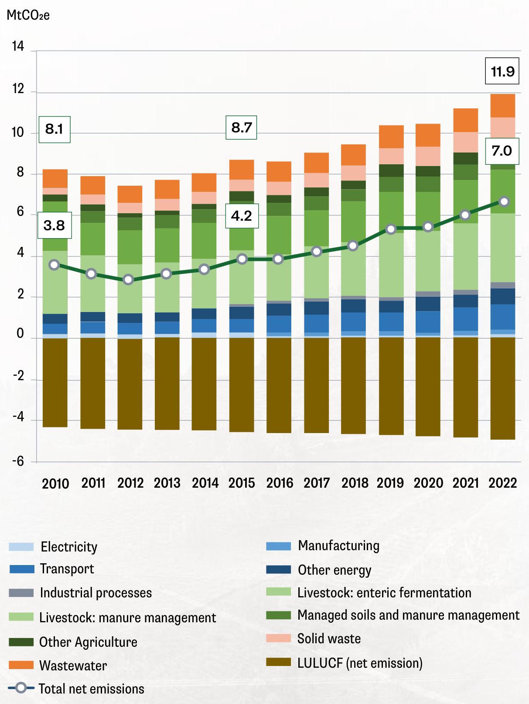
Categories |
2015 |
2022 |
||
Energy |
Fuel combustion activities |
Electricity production |
0.157 |
0.157 |
Manufacturing and Construction |
0.134 |
0.134 |
||
Transport |
0.712 |
0.712 |
||
Other energy use |
0.558 |
0.558 |
||
Industrial processes and product use (IPPU) |
Mineral Industry (cement and lime production) |
0.070 |
0.070 |
|
Metal industry (iron and steel, and ferro-alloys production) |
0.002 |
0.002 |
||
Non-energy products from fuels and solvent use |
0.004 |
0.004 |
||
Product uses as substitutes for Ozone Depleting Substances |
0.016 |
0.016 |
||
Agriculture |
Livestock |
Enteric fermentation |
2.661 |
2.661 |
Manure management |
1.875 |
1.875 |
||
Aggregate sources and sources of non-CO2 emissions in the soil |
Burning, liming and urea application |
0.008 |
0.008 |
|
N2O managed soils and manure |
0.659 |
0.659 |
||
Rice cultivation |
0.293 |
0.293 |
||
Other sources |
0.018 |
0.018 |
||
LULUCF |
Land |
Forest land |
-6.423 |
-6.805 |
Crop land |
1.546 |
1.592 |
||
Grass land |
0.316 |
0.321 |
||
Other land |
0.113 |
0.129 |
||
Harvested wood products |
-0.097 |
-0.127 |
||
Waste |
Solid waste disposal |
0.413 |
0.791 |
|
Biological Treatment of Solid Waste |
0.178 |
0.257 |
||
Incineration and Open Burning of Waste |
0.003 |
0.006 |
||
Wastewater Treatment and Discharge |
0.937 |
1.180 |
||
Total emissions: Energy |
1.562 |
2.480 |
||
Total emissions: IPPU |
0.092 |
0.253 |
||
Total emissions: Agriculture |
5.514 |
6.971 |
||
Total emissions: Waste |
1.532 |
2.234 |
||
Total emissions (excuding LULUCF) |
8.700 |
11.938 |
||
LULUCF (net emissions) |
-4.545 |
-4.890 |
||
Total net emissions (including LULUCF) |
4.155 |
7.048 |
Source: Rwanda National GHG Inventory data as of April 2025 Note: Minus signs (-) indicate net removals
The 2015 base year emissions of 8.7 million tCO2e are broken down by sector as follows:
Energy use accounted for 18% of the total (1.56 million tCO2e), mainly due to emissions from liquid fossil fuel combustion in road transport (diesel and gasoline) and fuel use in manufacturing and construction, and in buildings for heating, cooking and lighting.
Waste also accounted for around 18% of the total (1.53 million tCO2e), mainly from solid waste disposal and wastewater treatment and discharge.
Agriculture accounted for around 63% of the total (5.51 million tCO2e). Emissions from livestock accounted for the largest share (methane from livestock enteric fermentation and emissions from manure management) followed by emissions from managed agricultural soils.
IPPU accounted for the remaining 1% of the total emissions (0.09 million tCO2e), mainly arising from calcination in cement and lime production and the use of hydrofluorocarbons (HFCs) for refrigeration and air conditioning in buildings.
Within LULUCF, carbon removals from forest land were estimated to total 6.42 million tCO2 with storage in harvested wood products around 0.097 million tCO2. These removals were partially offset by LULUCF emissions from croplands, grasslands and other sources, resulting in a net removal within this category of around 4.55 million tCO2e in the base year.
Based on detailed projections developed for each sector, an aggregated economy-wide forecast of BAU emissions through 2035 is shown below in Figure 5.2. This represents the updated BAU baseline projection against which Rwanda’s mitigation contribution has been quantified.
At an aggregate level, total emissions excluding LULUCF are forecast to increase very significantly over the 2015-2035 period, rising from 8.7 million tCO2e in the base year to 32.9 million tCO2e in 2035. Taking LULUCF emissions and removals into account, annual net emissions increase from around 4.2 million tCO2e to 27.9 million tCO2e over the same forecast period.
The most rapid emission growth is forecast within energy use, which doubles its share of total aggregate emissions from 17% in 2015 to around 34% in 2035. This is driven largely by forecast fuel use in road transport, as well as energy use in buildings, manufacturing and construction. Agriculture, waste and IPPU also see significant emissions growth but more in line with trends seen over the past decade.
Increases in waste-related emissions are largely driven by rising population and per capita waste generation both of which are projected to increase, while agriculture emissions typically rise in line with expected domestic crop product and livestock demand. Despite potential for increased productivity, agricultural output is limited due to land availability, thereby limiting emissions growth from this sector. LULUCF net emissions are expected to remain fairly stable through 2035 with a slight increase in carbon removals overall within forestry.
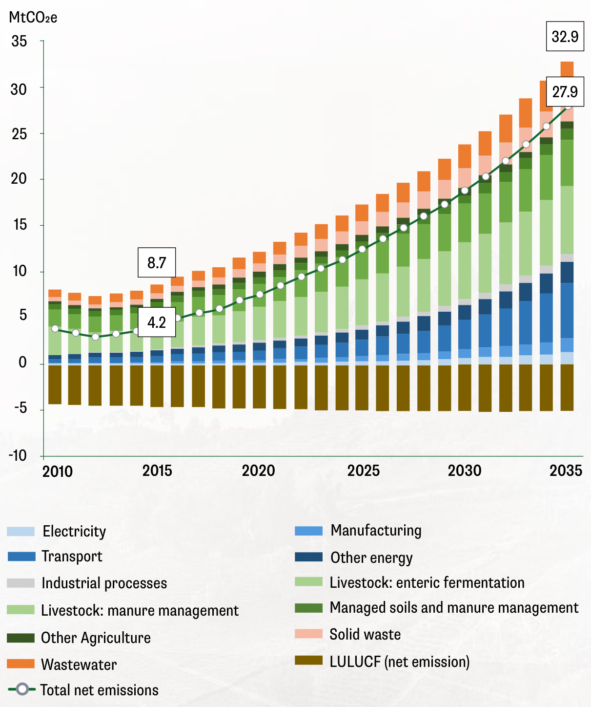
The overall outlook to 2035 reflects expectations of a growing contribution from fossil fuel use to Rwanda’s emissions profile, increasingly driven by increasing demand for electricity and transport services. This is shown more clearly by comparing the relative contribution of emitting sectors in the base year and target year, demonstrating how energy and waste’s share of total emissions increases over the period while that of agriculture’s declines (Figure 5.3). This shift reflects the assumptions underpinning the outlook concerning Rwanda’s development from a low-income country highly dependent on agricultural output towards a fast-growing service-based economy with rising demand for modern energy, transport and waste services.
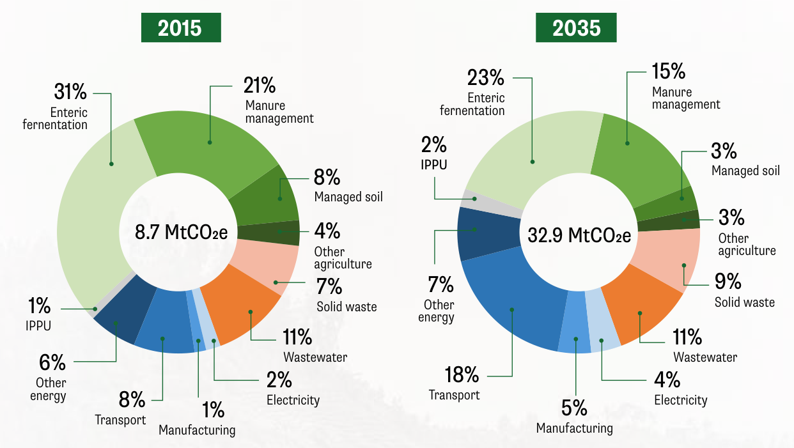
Figure 5.4 shows the country’s resulting per capita emissions forecast under the BAU reference scenario. These show how per capita emissions are expected to increase over the coming decade (2025-2035), broadly in line with the trends seen over the previous decade (2015-2025).
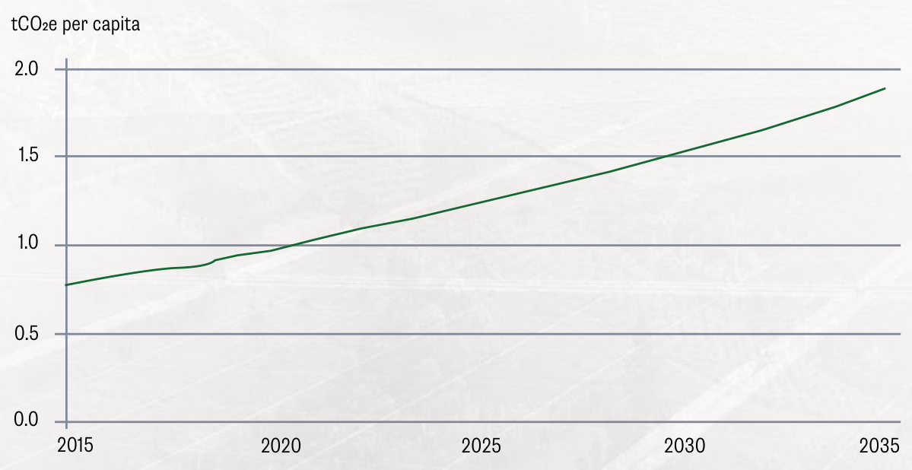
A detailed ‘bottom-up’ assessment of GHG mitigation measures for Rwanda was undertaken in order to determine which options are most suitable for inclusion within the NDC 3.0.
Figure 5.5 summarises the estimated emissions reduction potential in the target year of 2035 for all mitigation measures excl. LULUCF included within the NDC 3.0. The pie charts show for each key sector the total mitigation potential in million tCO2e compared to the BAU reference case and also the relative contribution made by each NDC measure. Note that some of the mitigation measures are grouped and simplified for ease of summary communication; further detail and disaggregation is provided for these later in this section.
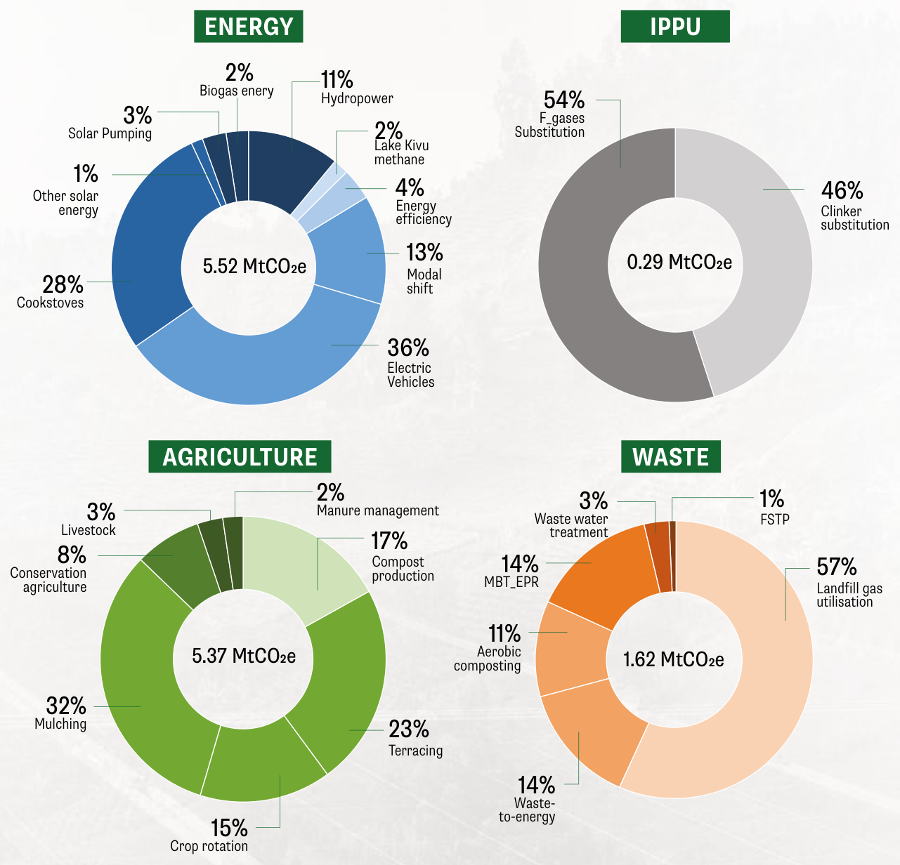
Measures identified within energy use are estimated to have the largest mitigation potential account for the second largest share of total mitigation potential by 2035, contributing up to 5.52 million tCO2e; a reduction of around 50% compared to BAU. These include a wide range of actions to increase the use of renewable and low carbon energy (so-called ‘supply-side’ measures) and actions to reduce the use of fossil-based energy use (so-called ‘demand-side’ measures). The analysis shows how measures implemented within the transport sector have the largest impact, accounting for around one half of the total estimated mitigation potential.
Emissions reductions arising from use of electric vehicles (EVs) are considered to be potentially significant, although delivering the rate of electricity grid decarbonisation planned within the NDC 3.0, from building new low carbon supply to displace existing fossil-based generation, will be key to the net level of mitigation achieved. Modal shift from private vehicle usage to public transport and NMT can also deliver significant benefits.
Increasing the use of domestic and renewable sources to meet the country’s increasing energy demand contributes significantly to the mitigation potential. This includes expanding the role of hydropower (both large- and small-scale new generation) and Lake Kivu methane gas as well as the use of solar energy for water heating, pumping for agricultural irrigation and off-grid electricity, and biogas in homes and institutions. The roll-out of clean and cookstove programmes nationwide, covering efficient biomass cookstoves as well as non-biomass (LPG and electric) cookstoves, is considered to have very significant potential accounting for almost one quarter of the total mitigation by 2035.
Measures identified within the agriculture sector account for the second largest share of total mitigation, contributing up to 5.37 million tCO2e in 2035; a reduction of around 37% compared to BAU. Soil conservation measures, which include terracing, conservation tillage (e.g. low, and no-tillage), mulching and multicropping and crop rotation practices, account for the majority of the sector’s estimated mitigation potential.
The bulk of the remaining mitigation potential includes measures to reduce enteric fermentation emissions from livestock, including the introduction of new species to replace local herds and improved husbandry and fodders, and the use of sustainable low-carbon composting. Despite livestock representing a large share of Rwanda’s emissions, practical challenges to livestock herd replacement and technical limitations to the methane reduction potential mean that these sources are unlikely to be significantly reduced within the NDC 3.0 period.
Within the waste sector significant potential is identified within energy utilisation measures such as landfill gas recovery and direct waste-to-energy (WtE) plants. Mechanical and biological treatment (MBT) of waste, aerobic composting, wastewater treatment and the development of faecal sludge treatment plants (FSTP) account for the remaining potential. Combining all measures results in an estimated reduction of around 25% for the waste sector compared to BAU by 2035.
Mitigation potential from IPPU sources is by comparison relatively limited, with the majority of emissions reductions arising from increased use of clinker substitute (pozzolanas) within cement production, followed by reduction of fluorinated gases (F-gases) within air conditioning and refrigeration applications – as required under the 2016 Kigali amendment of the Montreal Protocol on Substances that Deplete the Ozone Layer (UN, 1987). Implementation of these measures would reduce sector emissions by around 37% compared to BAU in 2035.
Figure 5.6 shows the estimated total feasible GHG mitigation potential for all NDC 3.0 mitigation measures combined (excluding LULUCF) over the period 2015-2035 compared to the BAU reference scenario. The potential is estimated at around 12.8 million tCO2e in 2035 against projected BAU emissions in the same year of 32.9 million tCO2e, representing a 39% reduction. According to the analysis, the mitigation potential identified within energy use accounts for 43% of the total potential, followed by agriculture (42%), waste (13%), and IPPU (2%).
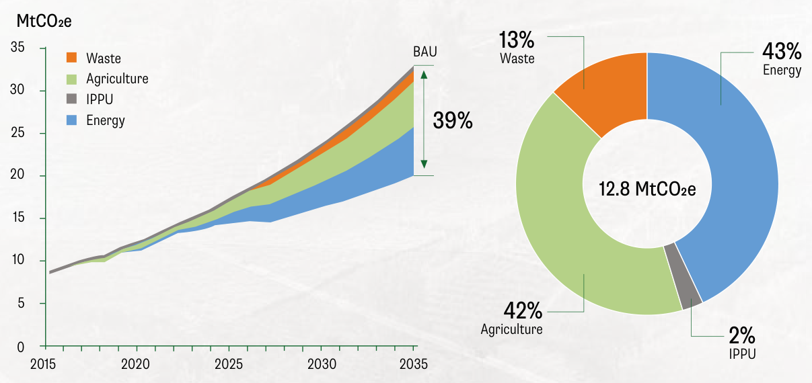
As described earlier, the NDC 3.0 updates and enhances the previous NDC 2.0 through its expansion to include all sectors within the GHG inventory. The current NDC therefore includes mitigation measures within the LULUCF category not previously considered within NDC 2.0.
Specifically, these include measures undertaken to protect and enhance the country’s carbon stock through a number of forestry-related interventions. These are summarised below in Figure 5.7 in terms of the targeted land area (hectares, ha) and additional annual carbon removal potential; estimated at around 2.1 million tCO2 in 2035, a 41% net increase in the national carbon sink compared to the BAU scenario.
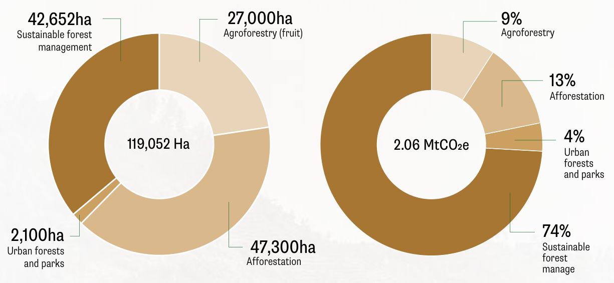
As shown in Figure 5.7, the planned NDC forestry measures cover almost 120,000 ha of the national land area through 2035. These include 47,300 ha of sustainably harvested commercial and conservation afforestation from tree species including Eucalyptus, Pinus and Alnus and the planting of 2,100 ha of new urban forests and parks to increase the “green lungs” of Kigali’s expanding urban areas. The planting of Eucalyptus is to be focused on steep slopes requiring protection and which are not considered suitable for agriculture or existing forest land. The choice of suitable species would be confirmed at implementation stage and fully consider ecological impacts.
Agroforestry targets include the planting of 27,000 ha of new fruit and nut trees such as Macadamia, Avocado and Guava at full tree density as well as planting less dense non-fruit woody trees and shrubs in existing agricultural land and in/or between small agricultural plots. The largest carbon removal potential is calculated to be associated with scaling up a range of Sustainable Forestry Management (SFM) practices such as reforesting and restoring existing degraded and harvested forests.
The classification of the NDC mitigation actions according to unconditional and conditional measures is summarised in Table 5.2. This provides the basis for Rwanda’s revised and enhanced mitigation contribution as set out below.
Mitigation measure |
Conditional |
Unconditional |
Mitigation Total 2035 (MtCO2e/yr) |
|
ENERGY |
Hydropower |
0.60 |
||
Lake Kivu methane |
0.10 |
|||
Energy efficient water distribution |
0.01 |
|||
Energy efficient tea and coffee production |
0.01 |
|||
Energy efficient brick kilns |
0.17 |
|||
Modal shift |
0.72 |
|||
Electric motorcycles |
0.63 |
|||
Other electric vehicles |
1.35 |
|||
Hybrid vehicles |
0.03 |
|||
Energy efficient lighting |
0.01 |
|||
Efficient biomass cookstoves |
0.92 |
|||
Clean non-biomass cookstoves (electric) |
0.18 |
|||
Clean non-biomass cookstoves (LPG) |
0.44 |
|||
Off-grid solar electrification |
0.001 |
|||
Rooftop solar PV |
0.03 |
|||
Solar water heating |
0.05 |
|||
Solar pumping |
0.15 |
|||
Biogas energy |
0.14 |
|||
AGRICULTURE |
Compost production |
50% |
50% |
0.91 |
Terracing |
1.23 |
|||
Crop rotation |
0.79 |
|||
Mulching |
1.74 |
|||
Conservation agriculture |
0.41 |
|||
Improved livestock husbandry |
50% |
50% |
0.16 |
|
Improved livestock species |
0.02 |
|||
Manure management |
0.12 |
|||
WASTE |
Landfill gas utilisation |
0.91 |
||
Waste-to-energy |
0.23 |
|||
Aerobic composting |
0.18 |
|||
Mechanical and biological treatment (MBT) |
70% |
30% |
0.24 |
|
Waste-water treatment |
80% |
20% |
0.04 |
|
Faecal sludge treatment plants (FSTP) |
0.01 |
|||
IPPU |
Clinker substitution |
0.13 |
||
F-gases substitution |
0.16 |
|||
LULUCF |
Agroforestry |
0.19 |
||
Afforestation |
80% |
20% |
0.26 |
|
Urban forests and parks |
0.08 |
|||
Sustainable forestry management (SFM) |
1.53 |
Rwanda’s NDC 3.0 mitigation contributions are presented with and without LULUCF for the purposes of transparency and easier comparison with the previous NDC 2.0 which excluded LULUCF.
Figure 5.8 illustrates the emission projections for the BAU baseline scenario and Rwanda’s mitigation contribution for domestic ‘unconditional’ measures and for all measures (unconditional plus conditional). The associated values are shown in Table 5.3. All numbers shown are in million tCO2e. The left-hand side of the graphic firstly shows emissions are forecast to rise significantly under the BAU projection from 8.7 million tCO2e in the base year to around 23.8 million tCO2e in 2030 and further to 32.9 million tCO2e in 2035. With the domestically supported ‘unconditional’ measures, emissions in 2035 are forecast to instead rise to around 31.1million tCO2e, representing a reduction against BAU of around 5%. With both unconditional and conditional mitigation measures included, emissions are instead forecast to rise to around 20.1 million tCO2e, equal to a reduction of 39% by 2035 against the same reference baseline.
The graphic shows, for this maximum 39% reduction pathway, how the mitigation is expected to be delivered across the different key sectors of energy, IPPU, waste and agriculture. As described above, climate friendly low emission practices in agriculture changes are expected to deliver the largest share of the benefits, closely followed by changes in energy use, including investments in cleaner low carbon fuels and technologies and wide-ranging energy efficiency. Waste and IPPU measures make a smaller albeit important contribution to the total.
Table 5.3 shows the aggregated economy-wide targets through to 2035, including updated targets for 2030.
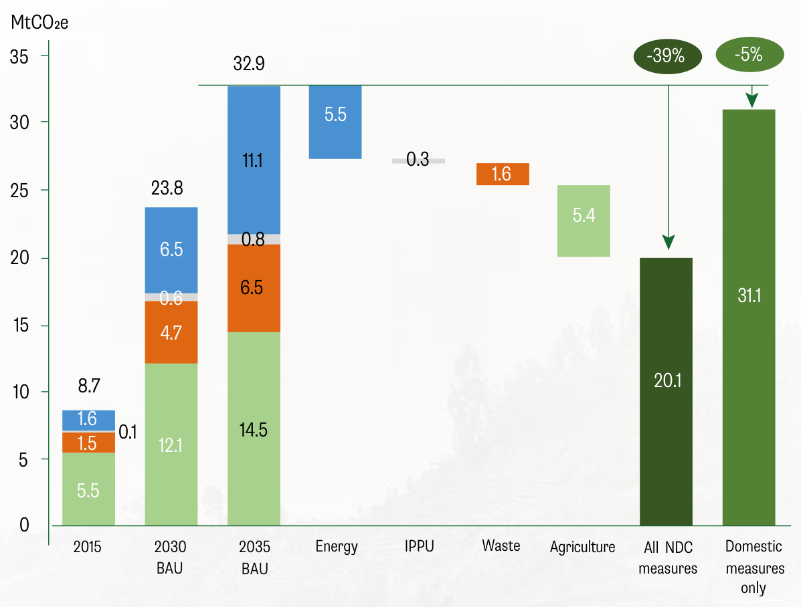
Scenario |
2015 |
2020 |
2025 |
2030 |
2035 |
Total emissions (million tCO2e/yr) |
|||||
BAU reference case |
8.70 |
12.29 |
17.42 |
23.85 |
32.94 |
Unconditional measures |
8.70 |
12.17 |
16.79 |
22.58 |
31.15 |
All NDC measures |
8.70 |
11.25 |
14.41 |
16.50 |
20.14 |
GHG reduction relative to BAU (million tCO2e/yr) |
|||||
Unconditional measures |
- |
0.12 |
0.63 |
1.26 |
1.79 |
Conditional measures |
- |
0.92 |
2.38 |
6.09 |
11.01 |
All NDC measures |
- |
1.04 |
3.01 |
7.35 |
12.80 |
GHG reduction relative to BAU (%) |
|||||
Unconditional measures |
- |
1% |
4% |
5% |
5% |
Conditional measures |
- |
7% |
14% |
26% |
33% |
All NDC measures |
- |
8% |
17% |
31% |
39% |
Figure 5.9 illustrates the BAU scenarios and NDC contributions to 2035 but now including LULUCF. The inclusion of LULUCF means that removals, and some additional emission sources, are now included, thereby including the entire national GHG inventory (i.e. all estimated emissions sources and removals in Rwanda). The net removals from LULUCF are shown by the bars below the x-axis. With the inclusion of LULUCF, which includes removals as well as emissions sources, the contributions are now shown on the basis of net emissions.
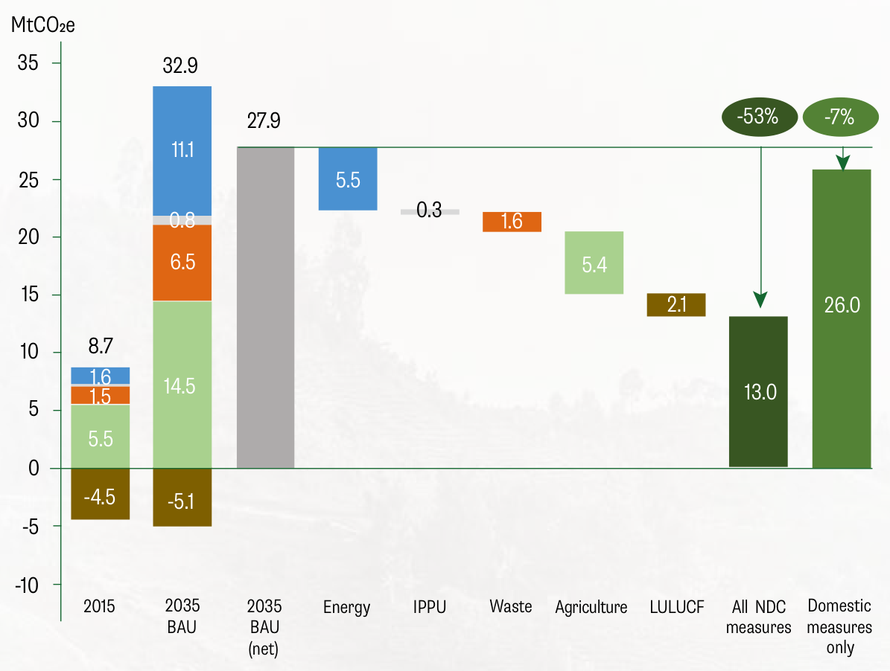
As with the previous graphic, the left-hand side shows how emissions are forecast to rise significantly under the BAU projection from 8.7 million tCO2e in the base year to 32.9 million tCO2e in 2035. Accounting for LULUCF emissions and removals, net emissions (emissions plus removals) are forecast to total 27.9 million tCO2e in 2035. With the domestically supported ‘unconditional’ measures, net emissions in 2035 are forecast to instead rise to around 26.0 million tCO2e, representing a reduction against BAU of around 7%. With both unconditional and conditional mitigation measures included, net emissions are instead forecast to rise to around 13 million tCO2e, equal to a reduction of 53% by 2035 against the same reference baseline.
Table 5.4 shows the aggregated economy-wide targets through to 2035, including updated targets for 2030.
Scenario |
2015 |
2020 |
2025 |
2030 |
2035 |
Total net emissions (million tCO2e/yr) |
|||||
BAU reference case |
4.15 |
7.50 |
12.45 |
18.80 |
27.86 |
Unconditional measures |
4.15 |
7.39 |
11.82 |
17.51 |
26.02 |
All NDC measures |
4.15 |
6.47 |
9.38 |
10.93 |
13.00 |
GHG reduction relative to BAU (million tCO2e/yr) |
|||||
Unconditional measures |
- |
0.12 |
0.63 |
1.29 |
1.84 |
Conditional measures |
- |
0.92 |
2.44 |
6.57 |
13.02 |
All NDC measures |
- |
1.04 |
3.08 |
7.86 |
14.86 |
GHG reduction relative to BAU (%) |
|||||
Unconditional measures |
- |
2% |
5% |
7% |
7% |
Conditional measures |
- |
12% |
20% |
35% |
46% |
All NDC measures |
- |
14% |
25% |
42% |
53% |
This section concludes by summarising an implementation plan for the NDC mitigation measures. The following tables present a high-level summary of each of the mitigation measures set out in this NDC 3.0. They include both unconditional and conditional measures. They are presented according to each key sector and summarised according to key implementation aspects, including the responsible government ministries and implementing lead agencies, the planned timeline, and estimated funding requirements through to 2035. In line with best practice, adaptation co-benefits and linkages with the United Nations (UN) Sustainable Development Goals (SDGs) are also shown.
Measures |
Timeline |
Line ministry (implementing entities) |
Funding estimates 2025-2035 |
Adaptation benefits |
Alignment with SDGs |
||
2015-2025 |
2025-2030 |
2030-2035 |
|||||
ELECTRICITY GENERATION |
|||||||
|
Grid-connected hydropower generation Development of large hydro capacity (capacity >5MW), including Nyabarongo II (43.5 MW) and Rukarara VI (9.76), 28.22MW small and mini hydro projects (capacity <5MW) and 68 MW (Rusizi III) regional projects by 2035. Results in the displacement of GHG emissions from fossil fuel power generation (peat, diesel oil, HFO). |
MININFRA (REG, EDCL) |
Capital costs estimated at 642 million USD. |
Potential for improved water management through flood and drought control. Increase in agricultural production due to improved water management and reduced exposure to extreme climate events. |
||||
|
Lake Kivu methane electricity generation Expansion of additional generating capacity from the methane gas extracted in Lake Kivu. This results in the displacement of GHG emissions from more GHG-intensive fossil fuel power generation (peat, diesel oil, HFO). |
MININFRA (REG, EDCL, RMB) |
Capital costs estimated at 220 million USD. |
Reduced reliance on imported fossil fuels to provide national energy access. |
||||
ENERGY EFFICIENCY IN INDUSTRY AND WATER |
|||||||
|
Energy efficient water supply Efforts to reduce losses from non-revenue water (NRW), reducing the need for pumping energy and avoiding fossil fuel use. |
MINIFRA (WASAC, RWB) |
Efficient water supply and use is accounted for within Adaptation |
Reduced reliance on imported energy supply. |
||||
|
Energy efficiency in coffee and tea production A range of energy efficiency measures focused on reducing firewood and electricity consumption in the coffee and tea sector. |
MINICOM, MININFRA (NIRDA, NAEB, REG, EDCL) |
1.3 million USD |
Increased resilience of tea and coffee plantations. Reduced pressure on forests resources, with reduced impacts from extreme rainfall events. |
||||
|
Energy-efficient mining Phasing out of diesel gensets for on-site electricity consumption, to be replaced with grid and/or on-site renewable power production. |
MoE (RMB, mining companies) |
1 million USD |
Reduced reliance on energy imports through use of indigenous energy resources. |
||||
|
Efficient brick kilns Phasing out the use of clamp kilns, and applying energy efficiency measures in the brick manufacturing industry. |
MININFRA (RHA, NIRDA, CPCIC, RFA, brick companies) |
13 million USD |
Increased resilience of brick manufacturing industry. Reduced reliance on biomass energy and related air pollution. Reduced pressure on forests. |
||||
LOW CARBON TRANSPORT |
|||||||
|
Modal shift A wide range of measures, including bus rapid transport (BRT) projects, bus lanes, non-motorised transport (NMT) lanes, and other modal shift projects, are contained in the Transport Sector Strategic Plan. |
MININFRA (RTDA, RURA, CoK, transport operators) |
497 million USD (including range of BRT and NMT measures across urban areas). |
Increased resilience of transport infrastructure. Improved health and reduction of harmful pollutants, enhacing resilience of population to disease and adverse climate impacts. |
||||
|
Electric Vehicles (EVs) and hybrids The e-mobility programme plans to phase in the adoption of electric buses, passenger vehicles (cars), and motorcycles from 2020 onwards, with a target of 70% of new vehicle registrations being EVs by 2035. This will result in displaced conventional vehicle sales, transport fuel imports, and associated GHG emissions. |
MININFRA (RTDA, REMA, RURA, CoK, transport operators) |
Incremental costs of EVs and nation-wide charging infrastructure est. 418 million USD. |
Reduction of harmful pollutants, enhancing resilience of population to disease and adverse climate impacts. |
||||
BUILDINGS AND AGRICULTURE |
|||||||
|
Efficient lighting in buildings Further dissemination of CFL and LED lamps in residential, commercial, and institutional buildings, supported by government subsidies and VAT exemptions on energy-saving lamps, and reduction of grid-based GHG emissions. |
MININFRA (REG, RHA) |
10 million USD (assumes 3 million CFL replacements with 7-year lifetime and 2 USD unit cost). |
Increased opportunities for education, indirectly increasing population resilience to extreme weather events. Reduced household expenditure on energy enhances resilie |
||||
|
Efficient and clean cook stoves Promotion of tier 3 and tier 4 cooking stoves in rural Areas with a target of 2,449,000 HH, Promotion of tier 4 and tier 5 in urban areas of energy transition in households by using clean non-biomass stoves (Electric, LPG, and ethanol stoves) targeting 1,209,000 HHs by 2035. This will achieve a more sustainable balance between supply and demand of biomass, and reducing firewood and fossil energy consumption for cooking. |
MININFRA, MoE, MINEDUC (EDCL, RFA, RGF) |
975 million USD (new stoves, training schemes and monitoring). |
Reduced dependence on the availability of traditional biomass fuels, which is vulnerable to climate variability. Reduced pressure on forest resources, with reduced impacts from extreme rainfall events. Reduced fossil fuel import dependence. |
||||
|
Off-grid and rooftop solar electrification Penetration of off-grid solar and rooftop solar PV panels is consistent with the ESSP targets of connecting around 223,191 households to off-grid electricity solutions, such as solar home systems, minigrids, and other decentralised energy solutions by 2029, equivalent to 44,639 connections per year. Displacement of grid power, diesel consumption, and associated GHG emissions. |
MININFRA (REG, EDCL, EUCL) |
19 million USD |
Reduced dependence on imported energy and increased resilience and energy security of buildings, households and companies. |
||||
|
Solar water heater (SWH) programme Installation of solar thermal water heaters within urban residential buildings supported by the use of loans and grants to subsidise purchase costs, as part of the National Green Building Code minimum compliance system. |
MININFRA (RHA, EDCL) |
SWH costs est. 56 million USD. Support programme est. 10 million USD. |
Improved climate resilience of buildings and reduced reliance on material and energy consumption, including energy imports. |
||||
|
Solar pumping for irrigation Use of solar water pumping systems for irrigation within agricultural production to replace diesel pumps, displacing fossil fuel use and associated GHG emissions. |
MININFRA, MINAGRI (RAB, RWRB) |
575 million USD. |
Reduced dependence on imported energy and increased food security. |
||||
|
Promotion of biogas for energy Increased use of anaerobic digestion of manure and waste for bioenergy production (bio-digestors). |
MININFRA, MINALOC (REG, EDCL, local government, RAB) |
71 million USD |
Reduced dependence on the availability of traditional biomass fuels, which is vulnerable to climate variability. Reduced pressure on forests and forest biodiversity, as well as food security. |
Measures |
Timeline |
Line ministry (implementing entities) |
Funding estimates 2025-2035 |
Adaptation benefits |
Alignment with SDGs |
||
2015-2025 |
2025-2030 |
2030-2035 |
|||||
CLINKER AND CEMENT PRODUCTION |
|||||||
|
Increased pozzolana use in cement Increasing the share of volcanic pozzalanas used within national cement production targeted atr an incremental 27% substitution of clinker with pozzolana through 2035. Results in reduced clinker produciton and associated calcination process CO2 emisisons. |
MINICOM (NIRDA, CPCIC, Cement companies) |
Capital costs and pozzolana material costs est. 12 million USD through 2035. |
Reduced dependence on imported coal, which results in reduction of cement production costs, thereby contributing to address national cement demand for adaptation to the effects of climate change. |
||||
FLUORINATED GASES SUBSTITUTION |
|||||||
|
Fluorinated gases substitution Gradual substitution of F-gases by less polluting substitutes, implemented as part of Rwanda’s commitments to the Kigali Amendment to the Montreal Protocol on Substances that Deplete the Ozone Layer. F-gases not to exceed the following percentages: (a) 2020 to 2024: 95%; (b) 2025 to 2028: 65%; (c) 2029 to 2033: 30%. |
MoE (RSB, REMA, private sector) |
Additional capital costs est. 5.6 million USD. Material costs est. 59 million USD through 2035. |
Reduction of climate impacts from F-gases with high GWP, which results in enhanced population resilience to adverse climate impacts. |
||||
Measures |
Timeline |
Line ministry (implementing entities) |
Funding estimates 2025-2035 |
Adaptation benefits |
Alignment with SDGs |
||
2015-2025 |
2025-2030 |
2030-2035 |
|||||
CROPS AND MANAGED SOILS |
|||||||
|
Soil and water conservation (crop rotation) Continous crop rotation of up to 850,000 Ha, leading to prevention of soil erosion and reduction of CO2 and N2O emissions and carbon sequestration in soils. |
MINAGRI, MoE (RAB, RFA, RWB) |
40 million USD |
Increased food security through enhanced soil fertility, increased crop stability and reduced soil erosion. Cleaner water provision, through reduced nutrient and soil runoff. |
||||
|
Composting and improved fertilizers Increased use of organic waste in soil fertilizers, supported by the target to apply composting within all agricultural households by 2035, and more judicious fertilizer use and promotion of fertigation to enhance fertiliser uptake. |
MINAGRI, MINICOM (RAB, RSB) |
6 million USD |
Enhanced effectiveness of fertilizer application, thereby supporting agricultural activities of vulnerable farmers. Reduced compostable waste related health risks such as dengue fever. Enhanced soil fertility and reduced soil erosion. |
||||
|
Soil and water conservation (terracing) Installation of 275,000 Ha land protection terracing structures in sloped arable areas to present soil erosion, leading to reduction of CO2 and N2O emissions and carbon sequestration in soils. |
MINAGRI, MoE (RAB, RWB) |
5 million USD (note that some costs fall under Adaptation) |
Enhanced effectiveness of fertilizer application, thereby supporting agricultural activities of vulnerable farmers. Reduced compostable waste related health risks such as dengue fever. Enhanced soil fertility and reduced soil erosion. |
||||
|
Soil and water conservation (mulching and multicropping) Mulching of coffee and bananas of up to 32,000 Ha and 200,000 Ha respectively leading to prevention of soil erosion and reduction of CO2 and N2O emissions and carbon sequestration in soils. |
MINAGRI (RAB, NAEB) |
3 million USD |
Increased food security through enhanced soil fertility, increased crop stability and reduced soil erosion. Cleaner water provision, through reduced nutrient and soil runoff. |
||||
|
Conservation agriculture (low tillage) Reduction in vertical movement of soil, leaving more crop residue on the soil surface, thereby reducing soil erosion, reduction of CO2 and N2O emissions and carbon sequestration in soils. |
MINAGRI (RAB) |
8 million USD |
Increased food security through enhanced soil fertility, increased crop stability and reduced soil erosion. Cleaner water provision, through reduced nutrient and soil runoff. |
||||
LIVESTOCK |
|||||||
|
Improved livestock husbandry Promotion of better livestock feed (i.e. legume fodder species) and training in better livestock management, under the Rwanda Livestock Master Plan. Reduction in CH4 emissions from enteric fermentation. |
MINAGRI (RAB) |
295 million USD |
Increased food security through enhanced yields. |
||||
|
Improved manure management Adoption of more efficient manure management systems, including use of cover material for manure storage pits, increased addition of straw, expansion of daily spread systems and training, under the Rwanda Livestock Master Plan. Reduction in GHG emissions from manure management. |
MINAGRI (RAB) |
120 million USD |
Increased food security through enhanced yields. |
||||
|
Improved livestock species: Replacement of 400,000 domestic cows with 200,000 improved cow species; expansion of fish farming, poultry and other small livestock to increase protein food supply without increasing cows; and change in livestock mix. Reduction in CH4 emissions from enteric fermentation. |
MINAGRI (RAB) |
210 million USD |
Increased food security through introduction of more drought resistant livestock species and enhanced yields. |
Measures |
Timeline |
Line ministry (implementing entities) |
Funding estimates 2025-2035 |
Adaptation benefits |
Alignment with SDGs |
||
2015-2025 |
2025-2030 |
2030-2035 |
|||||
SOLID WASTE |
|||||||
|
Landfill gas utilisation Extraction and utilization of landfill gas (LFG) for power generation in connection to semi- or fully-controlled landfills for urban areas. Reduced CH4 emissions from landfill sites and avoided CO2 emissions from displacement of fossil-based electricity use. |
MINAGRI, MoE (RAB, RFA, RWB) |
40 million USD |
Increased food security through enhanced soil fertility, increased crop stability and reduced soil erosion. Cleaner water provision, through reduced nutrient and soil runoff. |
||||
|
Waste-to-energy (WtE) plants Development of WtE plants in Kigali and other urban areas through energy recovery options other than LFG. Avoided CO2 emissions from displacement of fossil-based electricity use. |
MININFRA, MINALOC (WASAC, RURA, CoK and Districts) |
Total costs est. 107 million USD |
Creation of revenue generation opportunities of stakeholders in the waste management process chain. Increased access to electricity and reduced dependency on traditional biomass energy. |
||||
|
Aerobic composting Development of commercial scale aerobic composting systems for agricultural and forestry residue, manure, food processing, household kitchen and garden waste, and biosolids (organic solids from treated sewage). Reduction in CH4 emissions, since methane-producing microbes are not active in the presence of oxygen. |
MININFRA, MINALOC (RAB, WASAC, RURA, CoK, and Districts) |
Capacity building and program implementation costs 5 million USD. Annual costs est. 6 million USD. |
Improved retention of soil fertiliser and enhancing soil buffering capacity. Increased food production and nutrition security. Creation of revenue generation opportunities for local communities. |
||||
|
Mechanical and biological treatment (MBT) of waste Implementation of MBT facilities to separate recyclables, organic waste, and residual waste before disposal. The process includes mechanical sorting for material recovery and biological treatment (composting or anaerobic digestion) for organic waste, reducing landfill waste volume and emissions. Reduced CH₄ emissions by diverting organic waste and lowering CO₂ through increased recycling. |
MININFRA, MINALOC (WASAC, RURA, CoK, and Districts) |
Total capital and operating costs estimated at 45 million USD through 2035 |
Reduces landfill volumes and limits leachate risks and protects groundwater quality. Recovered compost enhances soil health and supports local food security in drought-prone areas. Decentralized MBT facilities also create jobs and income, strengthening community resilience to climate shocks. |
||||
WASTE WATER TREATMENT AND RE-USE |
|||||||
|
Waste-water treatment plants (WWTP) Investment in wastewater treatment and reuse technology, reducing methane emissions from wastewater and providing a nutrient-rich digestate that can be used as a sustainable fertilizer. Reduction of CH4 and CO2 emissions. |
MININFRA, MINALOC (RURA, CoK and Districts, WASAC) |
Capital costs 1 million USD per WWTP. Annual costs est. 1.5 million USD. Total cost est. 110 million USD. |
Reduced water contamination. Increased agriculture production and groundwater recharge. Increased food production and nutrition security. |
||||
|
Faecal sludge treatment plants (FSTP) Development of sludge treatment facilities to manage and treat faecal sludge from on-site sanitation systems. Reduced CH₄ and CO₂ emissions through controlled sludge treatment, biogas recovery, and improved waste-to-resource conversion. Reflected in the Water and Sanitation SSP (2024-2029). |
MININFRA, MINALOC (RURA, CoK and Districts, WASAC |
Total capital and operating costs estimated at 46 million USD through 2035 |
Converting sludge into nutrient-rich biofertilizer that improves soil moisture and crop yields. Energy production via gas combustión, thereby reducing improving energy security and resilience |
Measures |
Timeline |
Line ministry (implementing entities) |
Funding estimates 2025-2035 |
Adaptation benefits |
Alignment with SDGs |
||
2015-2025 |
2025-2030 |
2030-2035 |
|||||
FORESTRY |
|||||||
|
Agroforestry Planting of 27,000 ha of new fruit and nut trees such as macadamia, avocado, mangoes and guava at full tree density as well as planting less dense non-fruit woody trees in existing agricultural land and in or between small agricultural plots |
MoE, MINAGRI (RFA, RAB) |
Planting and operating costs estimated at 211 million USD to 2035 |
Recovery, soil conservation and slope stabilisation, promotion of gender integration, food diversification and sources of income among agroforestry system practitioners. |
||||
|
Afforestation Planting 47,300 ha of sustainably harvested commercial and conservation afforestation from tree species including eucalyptus, pinus and alnus |
MoE (RFA) |
Planting and operating costs estimated at 40 million USD to 2035 |
Increased biodiversity in the afforested areas and improved access to the ecosystem services provided by the forests, such as non-timber forest products, conservation and recovery of soil fertility, water regulation; improved soil conservation and erosion reduction. Support of nesting environments for birds, which are agriculture pest predators. |
||||
|
Urban forests and parks Planting of 700 ha of native species and 1,400 ha of bamboo in river bank zones by 2035 |
MoE MINALOC (RFA, CoK, Districts) |
Total costs estimated at 2 million USD to 2035 |
Improved soil conservation and erosion reduction. Improved microclimate and air quality. |
||||
|
Sustainable forestry management (SFM) 42,652 ha of harvested and degraded forest area undergoing reforestation, rehabilitation and protection of steep slopes |
(RFA, CoK, Districts) |
Total costs estimated at 37 million USD to 2035 |
Restoration of biodiversity in the revegetated areas and improved access to the ecosystem services provided by the reforested areas, such as non-timber forest products, conservation and recovery of soil fertility, water regulation; improved soil conservation and erosion reduction. |
Table 5.10 below shows the funding requirements associated with all NDC mitigation options, estimated at 5 billion USD through 2035. These represent the incremental capital investment costs required for example for new plant, technology, infrastructure and equipment as well as items such as programme set-up, training and other implementation costs.
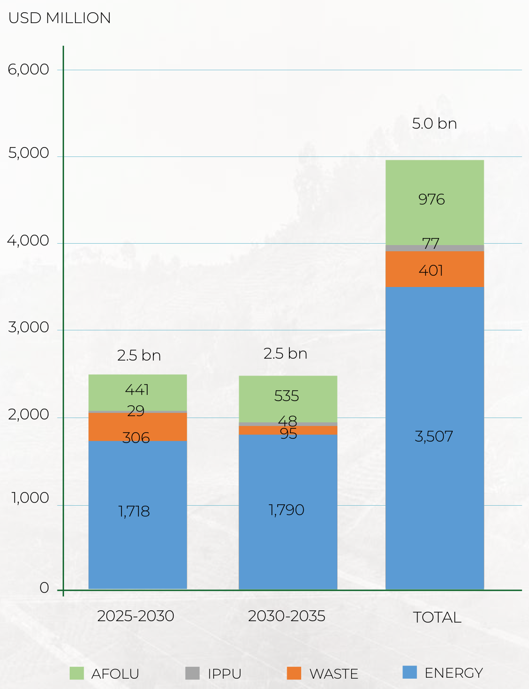
The investment levels for each sector are also shown. Mitigation measures within energy use are seen to account for the majority of the funding needed over the next decade. Clean energy interventions in buildings and home account for the largest share of the total and include measures such as solar water heating and efficient cookstoves.
These are followed by increasing the use of clean and renewable energy supply account for most of the remaining amount, including for example expanding renewable grid power generation (hydropower and Lake Kivu methane). Policies and measures with the transport sector account for the remaining share, around one quarter of the sector total, mainly associated with the incremental costs of EVs and fuel-efficient vehicles, and investments in charging infrastructure, public transport and NMT infrastructure.
Funding requirements within AFOLU account for 20% of the total estimated needs, associated with a wide range of forestry, sustainable agriculture and livestock interventions. Investments in waste facilities such as landfill gas recovery equipment and waste-to-energy units account for the bulk of the remaining requirement. In order to achieve the projected mitigation outcomes, around one half of the total 5 USD billion will be required in the period 2025-2030 and the remaining half in the period 2030-2035. Note that the estimated investment required for NDC 3.0 is cumulative and incorporating the commitments made under the 2020 NDC (NDC 2.0).
Sector |
2025-2030 |
2030-2035 |
TOTAL |
Electricity |
70 |
792 |
862 |
Manufacturing, industry and construction |
3 |
12 |
15 |
Transport |
237 |
678 |
915 |
Buildings |
797 |
273 |
1,070 |
Other energy use |
610 |
35 |
645 |
Energy total |
1,718 |
1,790 |
3,507 |
IPPU total |
29 |
48 |
77 |
Crops and managed soils |
92 |
89 |
181 |
Livestock |
218 |
287 |
505 |
Forestry and land use |
111 |
142 |
290 |
AFOLU total |
420 |
518 |
976 |
Solid waste |
171 |
74 |
245 |
Wastewater treatment and re-use |
134 |
21 |
156 |
Waste total |
306 |
95 |
401 |
Total |
2,472 |
2,451 |
4,960 |
Figure 5.11 shows the estimated funding requirements according to the unconditional and conditional contributions. The unconditional contribution to be implemented by Rwanda through a range of domestic public and private funding sources (e.g. consumers, companies, government budgets) accounts for an estimated 10% of the total requirement through 2035.
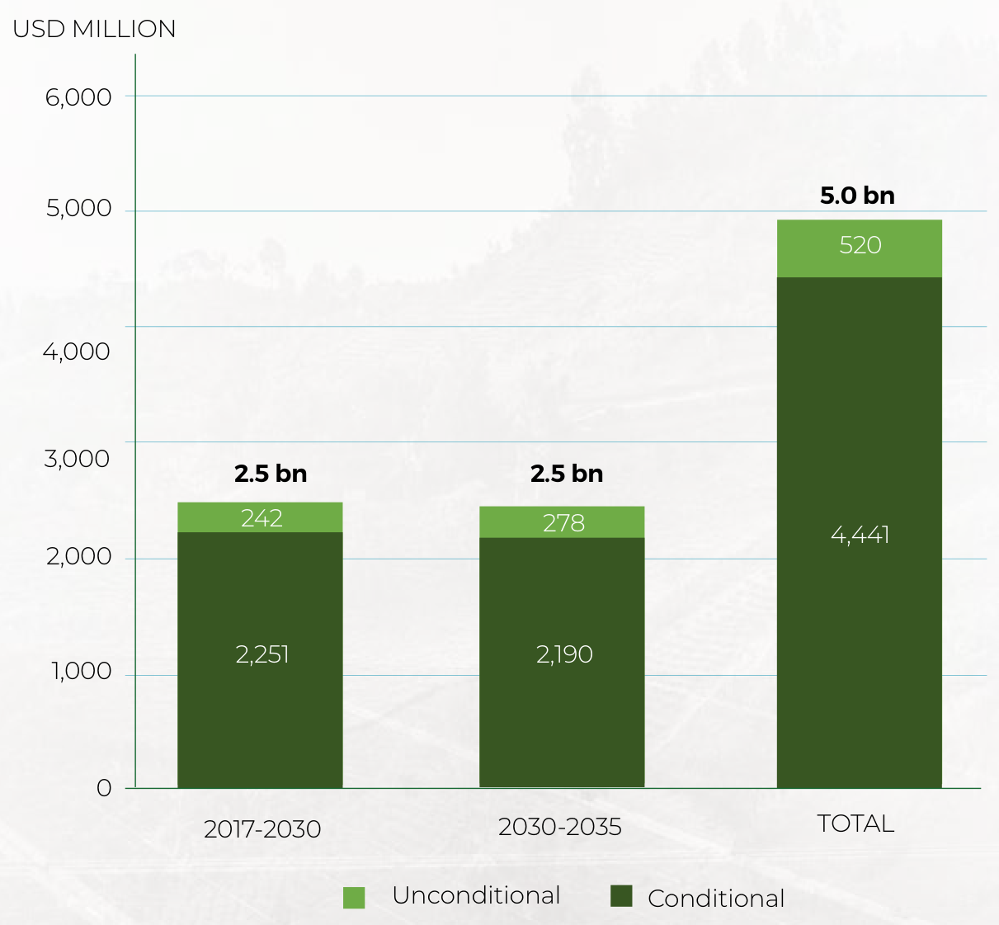
Rwanda’s adaptation actions are guided by the 2019 National Environment and Climate Change Policy, which aims for “Rwanda to have a clean and healthy environment resilient to climate variability and change that supports a high quality of life for its society” (MoE, 2019). The adaptation actions are also guided by NST2. This is the main implementation document to deliver Rwanda’s Vision 2050 and it recognizes environment and climate change are cross-cutting areas that must be addressed to achieve inclusive and sustainable development (GoR, 2024b).
In response to the growing challenges of climate change, Rwanda has established a comprehensive and robust legal, policy, and strategic framework which prioritizes adaptation across eight key sectors: agriculture; water resources; land and forestry; human settlements; health; transport; mining, and cross-sectoral activities. This sectoral approach has been consistently adopted in strategic documents, including the revised GGCRS (GoR, 2023a) and the sector strategic plans related to the Climate, Environment and Natural Resources (CENR), agriculture, urbanization and human settlement, transport, and water, sanitation and hygiene (WASH), health, education, among others.
Rwanda’s NDC 3.0 includes a clear results framework and financial needs assessment for its adaptation priorities. This includes quantified targets, a criteria-based evaluation of priority interventions, and the development of a monitoring, evaluation, and learning framework for adaptation actions. This framework aims to strengthen national capacity for implementing actions, as well as resource mobilization, over the planned 2025-to-2035-time horizon.
Rwanda identified a set of 24 adaptation priorities in the previous NDC 2.0 (GoR, 2020a). Since then, Rwanda has experienced rising climate impacts, as set out in Section 2 with rising loss and damage (see Section 7). This includes the impact of the 2023 floods and landslides, which led to 131 fatalities (MINEMA, 2023) and estimated damages of RWF 518.58 billion (USD 415 million) to recover from the damages and economic losses (MINECOFIN, 2023).
Additional information has also emerged on the potential future impacts of climate change to Rwanda, which indicate much higher economic costs than previously identified, and thus greater adaptation needs. This includes the analysis in the World Bank’s Country Climate and Development Report (World Bank, 2022) which estimates that without adaptation, climate change could reduce annual GDP by 5–7% below baseline levels by 2050.
This indicates that Rwanda needs to increase the rate and ambition of adaptation, to address rising impacts and higher future risks. Rwanda’s updated NDC 3.0 aims to do this by:
Addressing Sectoral Exposure and Vulnerability through targeted, evidence-based interventions in the eight sectors.
Mobilizing Finance, both domestic and international, to scale up adaptation implementation.
Strengthening Institutional Capacity, including data systems, local governance, and inclusive decision-making, to ensure that adaptation gains are sustainable and equitable.
Aligning adaptation priorities with NST 2 and sector strategic plans (e.g., CENR, agriculture, WASH, urbanisation and human settlements, transport, cross-cutting areas).
Strengthening all sectors by adding new adaptation interventions and SMART indicators across education, health, WASH, urbanization, human settlements, and other cross-cutting areas.
Through this integrated approach, blending ecosystem-based measures, technological innovation, and community engagement, Rwanda seeks to turn its geographic and climatic challenges into opportunities for resilient development and economic growth, aligned with the Vision 2050 goals.
The prioritised adaptation measures are set out below, for each of the eight thematic areas and cross-cutting areas.
Water Resources: NDC 3.0 accelerates Rwanda’s transition to Integrated Water Resources Management (IWRM). It includes catchment restoration, using terracing and agroforestry, with a target to rehabilitate over one million ha of degraded land by 2030. This will reduce run-off and floods risks, and help regulate water flows including dry-season flows. It also includes increased water storage to enhance water security, as well as improved efficiency of water use. This is be supported by a target to increase water-quality monitoring from 51 to 76 water bodies by 2030 and to 101 by 2035. At the same time, flood protection investments will be increased to help protect 40% of high-risk households by 2030 and 60% by 2035. The NDC will also support sustainable expansion of irrigation, with a target to expand the irrigated area from 102,000 hectares in 2025 to 200,000 ha by 2030, to support agricultural production and food security from the impacts of rainfall variability.
Agriculture: Rwanda’s drive towards climate-resilient and sustainable agriculture will combine on-farm water security (within the IWRM framework above) with an increase in solar irrigation, combined with climate-resilient seeds and livestock breeds. The increasing impacts of heavy rainfall and soil erosion will be tackled by soil conservation using terracing and agroforestry. Priorities along the value chain have also been identified, with storage and processing hubs utilizing solar dryers and biogas proposed to reduce post-harvest losses. These actions are complemented with a National Agriculture Insurance Scheme for crop and livestock insurance (MoE, 2024). Together, NDC3.0 measures can create a resilient and sustainable agri-food system. The adoption of improved seeds (LSF) is proposed to rise from 85.7% of farmers (today) to universal uptake by 2030 and targeted, climate-resilient varieties to rise to 5% of farms in 2030 and 77% in 2035). Post-harvest storage capacity is proposed to double to 551,000 metric tons by 2030, reducing losses from 13.8% currently to under 5%, while insurance schemes are proposed to expand and cover over 90,000 ha by 2030, providing smallholders with a safety net to extreme events.
Land Administration & Forestry: By 2030, NDC 3.0 sets at target that all districts will implement hazard-informed land-use plans through a national spatial-data infrastructure, steering development away from flood- and landslide-prone zones. Payment-for-Ecosystem-Services schemes will reward communities and will restore over 40,000 ha of forests by 2030 and nearly 70,000 ha by 2035, while agroforestry plantings are planned to exceed one million ha by 2030, collectively reducing flood intensity and sustaining river baseflows.
Urbanization & Human Settlements: Rwanda’s NDC 3.0 requires that every aspect of urban and development planning from new roads and buildings to public services explicitly accounts for climate change and disaster risk. To meet this requirement, the Government will transform informal, flood-prone neighbourhoods into planned, resilient communities by embedding stormwater drains, rain gardens, and parks into city master plans while actively mobilising climate finance through the Green Climate Fund, Adaptation Fund, and other mechanisms to support locally led upgrading and climate-resilient housing projects. Progress will be tracked not only by the proportion of residents living in risk-informed settlements and the amount of green space per capita but also by the share of informal settlement upgrading initiatives that secure dedicated climate finance.
Relocation of homes and community facilities in high-risk areas will occur only as a last resort, following careful planning, meaningful community consultation, and guaranteed access to climate-resilient shelter, basic services, and livelihood support in the new zones. Updated land-use regulations will establish buffer strips along waterways, enforce minimum ground-elevation standards, and require straightforward flood-proofing measures. By coupling spatial planning with targeted finance for local implementation, these measures will reduce flood impacts, protect lives and property, and guide Rwanda’s cities toward a low-carbon, climate-resilient future.
WASH: Frequent floods, landslides, erosion, and droughts threaten Rwanda’s progress towards universal water and sanitation access, diverting resources to emergency repairs rather than service expansion (Malik et al., 2024). In response, NDC 3.0 commits to delivering universal, climate-resilient WASH by 2030: every village will benefit from improved water supply networks and solar-powered treatment facilities, capacity will double, and non-revenue water losses will be reduced by half. At baseline, 92 per cent of households already have adequate sanitation; the goal is to reach and then sustain 100 per cent coverage by 2030. Currently, none of the sewerage systems in flood-, landslide-, or erosion-prone areas are climate-proofed. Under NDC 3.0, two high-risk systems will be retrofitted by 2030 and five by 2035, incorporating flood defences, slope stabilisation, and erosion control measures (WASAC, 2024a; 2024b; MINEDUC, 2024).
Health: NDC 3.0 addresses the growing risks of climate change to vector-borne diseases. At baseline, the incidence of malaria is 76 cases per 1,000 people. Under NDC 3.0, the aim is to reduce this rate to 41.4 cases per 1,000 by 2030 by integrating real-time Meteo-Rwanda alerts into health facilities, alongside complementary interventions.
Transport: NDC 3.0 focuses on climate-proofing primary road corridors with slope stabilization, elevated embankments, and upgraded drainage, while rolling out climate-smart, public transport routes. To improve the resilience of transportation and connectivity during extreme weather, NDC 3.0 will retrofit primary roads, bridges, and urban corridors with slope stabilization and raised embankments.
Mining: Rather than viewing mining as a vulnerable sector to climate risks, NDC 3.0 positions it as a resilience partner, with the ambition that 90% of operations will adopt climate-compatible practices, such as water-efficient processing and dry-stack tailings, by 2030. Abandoned sites will be rehabilitated into green buffer zones, and mandatory flood-impact assessments will prevent contamination during extreme events.
Cross-cutting: Under NDC 3.0, a real-time, multi-hazard network will connect meteorological data to every district post and enabling pre-emptive actions and planned evacuations ahead of climate hazards.
The table below summarizes the prioritized sector adaptation interventions, including corresponding indicators, baselines, and targets for 2030 and 2035. It also outlines indicator categories, responsible government ministries, implementing lead agencies, estimated adaptation finance requirements, mitigation co-benefits, and alignment with relevant SDGs. For a small number of indicators, targets are currently presented up to 2030 only. In these cases, targets beyond this timeframe will be agreed following further discussions with relevant organisations and included within the next updated NDC.
The indicators in are organised into two groups. Category A comprises metrics adopted from global adaptation-reporting frameworks, specifically, the definitions and performance targets required by international climate finance bodies such as the Adaptation Fund, the Green Climate Fund, and the UNFCCC. Category B encompasses indicators used to monitor and evaluate domestic adaptation projects, reflecting the reporting standards and logical frameworks applied at the national level. This dual approach ensures compatibility with both international investment fund requirements and in-country project reporting practices.
SN |
Intervention |
Indicator |
Baseline |
Line Ministry (implementing entities) |
Target |
Category of indicator |
Funding estimate 2025-2035 (USD) |
Mitigation co-benefits |
Alignment with SDGs |
|
2030 |
2035 |
|||||||||
WATER RESOURCES |
||||||||||
1 |
Enhance National Water Security through water storage and efficient water use |
Water storage per capita (m³/capita) |
5.3 |
MoE/MINAGRI (RWB, RAB, Private sector) |
12 |
17.6 |
B |
1.5 billion |
Enables greater hydropower use and reduces diesel backup generation Improves reservoir-fed hydropower, cutting grid emissions Optimizes treatment plant operations, lowering energy use. |
|
Artificial water storage per capita (m3/capita) |
5.8 |
MoE/MININFRA (RWRB, WASAC, Private sector) |
45 |
55 |
B |
|||||
2 |
Improve water monitoring and pollution control |
Number of water bodies monitored for ambient water quality and water quantity |
51 |
MoE (RWB/Private sector) |
76 |
101 |
B |
2.25 million |
||
3 |
Build flood protection and improve water drainage systems around homes in risk areas |
% of households in high-risk areas protected from flood-related hazards |
9 |
MININFRA (RWB, Private sector, districts) |
40 |
60 |
B |
2.2 million |
Avoids rebuilding and associated emissions. Reduces pump-powered extraction and associated GHG emissions. Increases soil and biomass carbon sequestration and lowers carbon and N₂O from erosion. |
|
4 |
Enhance water user registration and compliance by increasing official permits and regular payment of environmental fees |
Water users equipped with permits and compliant with environmental fees |
1,020 |
MOE (RWRB/Private sector) |
1,500 |
2,000 |
B |
0.8 million |
||
5 |
Implement catchment restoration (hillside terracing and agroforestry in erosion-prone areas) to reduce runoff, stabilize soil, and restore degraded land |
Area of land at high risk of soil erosion restored (Ha) |
332,861 |
RWB, REMA |
550,000 |
640,000 |
B |
700 million |
||
AGRICULTURE |
||||||||||
6 |
Restore degraded critical ecosystems (wetlands, lakeshores, riverbanks and natural forests) |
Area of degraded critical ecosystems and riparian areas restored and managed (Ha) |
1,852 |
MoE (RWB, RFA, REMA) |
3,300 |
4,414 |
B |
107 million |
Rehabilitated wetlands and riparian zones act as carbon sinks |
|
7 |
Climate-resilient crops for agri-food systems |
% of farmers using improved seeds (LSF) |
85.7 |
MINAGRI (RAB, NAEB, Private sector, Civil society) |
100 |
100 |
B |
100 million |
Reduces input-intensive replanting and fertilizer use. |
|
% of farmers using improved seeds (SSF) |
35.9 |
MINAGRI (RAB, NAEB, Private sector, Civil society) |
52.8 |
66.9 |
B |
|||||
Mt of improved quality seeds used |
7,576 |
10,635 |
12,762 |
B |
||||||
% of farmers using climate resilient seed varieties |
33 |
100 |
114 |
B |
||||||
8 |
Sustainable animal breeding |
Number of functional centres of excellence for animal genetics |
0 |
MINAGRI (RAB, NAEB, Private sector, Civil society) |
2 |
3 |
B |
30.88 million |
Improves efficiency, reducing enteric methane per unit output. Reduces food waste, improving efficiency and reducing -production emissions. |
|
Number of animal breeding centres operational |
15 |
22 |
27 |
B |
||||||
9 |
Upgrade post-harvest storage facilities to increase capacity and reduce losses |
National storage capacity of food crops in MT |
318,025 |
MINAGRI (RAB, NAEB, Private sector, Civil society) |
417,025 |
436,825 |
B |
775.4 million |
||
% of post-harvest losses on food crops |
13.8 |
8 |
4.8 |
B |
||||||
10 |
Develop sustainable land management practices (climate-smart agriculture) |
Area of land under terraces-Ha (Radical) |
142,318 |
MINAGRI (RAB, NAEB, NLA, Districts, Private sector, Civil society) |
165,143 |
169,708 |
B |
174.1 million |
Enhances soil carbon sequestration and reduces N₂O emissions. |
|
Area of land under terraces-Ha (Progressive) |
1,032,282 |
MINAGRI (RAB, NAEB, NLA, Districts, Private sector, Civil society) |
1,096,082 |
1,108,842 |
B |
174.1 million |
Enhances soil carbon sequestration and reduces N₂O emissions. |
|||
11 |
Expand area under irrigation and improve water management |
Area of land under irrigation (Ha) |
71,549 |
MINAGRI (RAB, NAEB, Districts, Private sector, Civil society) |
132,619 |
144,825 |
A |
1,107 million |
||
12 |
Strengthen agriculture de-risking for resilience (crop and livestock insurance |
Ha of crops under insurance |
33,269 |
MINAGRI (RAB, NAEB, Banks, insurance companies, Private sector) |
83,425 |
100,110 |
B |
267 million |
||
Cattle insured |
48,962 |
64,858 |
77,830 |
B |
||||||
Pigs insured |
7,300 |
173,030 |
207,636 |
B |
||||||
Poultry insured |
274,506 |
521,957 |
626,348 |
B |
||||||
Land and Forestry |
||||||||||
13 |
Enhance land administration and management |
Number of operational geospatial information systems integrated with environmental protection and land value |
1 (NDSI) |
MoE (NLA (Lead)), |
4 (NSDI with LAIS, Land value and IBPMIS; Compliance monitoring system) |
B |
30 million |
Prevents deforestation-and related CO₂ releases. |
||
Number of expropriated parcels registered2 |
599,221 |
MoE, MININFRA (REMA, RHA) |
699,221 |
699,221 |
B |
3 million |
||||
Updated spatial boundaries of agriculture, water, forestry and other land uses including biodiversity areas, urban settlements and rural settlements (Ha) |
10,000 |
MoE (Lead), REMA, NLA, RWB |
237,805 |
118,902 |
B |
26.39 million |
||||
Ha of resilience physical plans developed that align with district and national land use and development master plan |
2,375 |
MoE (NLA, MINALOC, District) |
8,564 |
4,282 |
B |
9.31 million |
||||
Number of households in green model villages or green cities |
1,200 |
MoE (,RHA, REMA, Districts) |
2,400 |
3,600 |
B |
24.5 million |
||||
14 |
Manage forestry resources sustainably |
Area (Ha) of land restored or maintained under a Payment for Ecosystem Services (PES) scheme |
3,000 |
MoE (RFA, District) |
40,000 |
68,460 |
B |
92.1 million |
Expands long-term carbon sinks. |
|
Area (Ha) of agroforestry trees planted |
525,000 |
MoE (RFA, Districts) |
1,058,920 |
1,469,605 |
B |
110 million |
Increases farm-level carbon sequestration. |
|||
Area (Ha) of forest managed under the Forest Monitoring and Evaluation System (FMES) |
91,284 |
MoE (RFA (Lead), Districts) |
724,695 |
1,211,922 |
B |
4 million |
||||
Number of tree nurseries well managed at cell level |
1,800 |
MoE (RFA) |
2,000 |
2,154 |
B |
1 million |
||||
Urbanisation and human settlements |
||||||||||
15 |
Increase access to decent housing and enhanced resilience of communities |
Percentage of urban population living in unplanned settlements |
60 |
MININFRA (RHA, NISR, Districts) |
51.2 |
44 |
A |
400 million |
Promotes compact, energy-efficient construction with lower heating/cooling emissions. |
|
Percentage of rural households living in integrated planned rural settlements |
65.4 |
84.2 |
100 |
B |
||||||
16 |
Develop inclusive, climate resilient Cities and Towns |
Percentage of land (ha) with detailed physical plans that are risk-informed |
(2024) |
MININFRA, MoE(CoK & Districts) |
100 |
100 |
B |
8.35 million |
Integrates low-carbon cooling |
|
% of the built-up area of cities that is open space and green space for public use |
19.8 |
30 |
30 |
A |
||||||
Water, sanitation and hygiene (WASH) |
||||||||||
17 |
Increase access to improved drinking water |
Percentage of villages with access to improved drinking water |
80 |
MININFRA, MINALOC (WASAC, WASH partners) |
100 |
100 |
A |
640 million |
Plugging leaks and stopping unauthorised withdrawals reduces treatment and pumping requirements, enhancing energy efficiency and lowering greenhouse gas emissions |
|
Daily water production (m3/day) capacity increased |
329,652 |
MININFRA (WASAC, WASH partners) |
688,686 |
987,881 |
B |
|||||
Non-revenue water reduced |
39.5 |
MININFRA (WASAC, WASH PARTNERS) |
25 |
23 |
B |
|||||
Number of high-risk water systems (plants, pipeline,s and pumping stations) to be climate-proofed |
0 |
MININFRA (WASAC, wash partners) |
3 WTPs |
5 WTP |
B |
|||||
Health |
||||||||||
18 |
Strengthen preventive measures and create capacity to adapt to disease outbreaks |
Annual incidence rate for malaria (cases per 1,000 population) |
76 |
MINISANTE, (RBC, Meteo Rwanda, Civil society) |
41.4 |
- |
A |
100 million |
||
Transport |
||||||||||
19 |
Improved transport infrastructure and services to increase resilience to climate change |
Reduced length (km) of roads vulnerable to landslides |
67,683 (2022) |
MININFRA / MINEMA (RTDA, RHA, Meteo Rwanda; Districts) |
384 km |
- |
B |
640 million |
Supports modal shift to low-carbon public transit. Lowers per-capita transport emissions. |
|
% of population conveying with public transportation (total/urban/rural) |
21 |
23 |
24 |
B |
||||||
Mining |
||||||||||
20 |
Climate compatible mining |
Percentage of companies deploying climate-compatible mining practices |
74.5 |
RDB/MINICOM (RMB, RWB, Private Sector, Civil society) |
90 |
100 |
B |
23.2 million |
Implements energy-saving processes and dry-stack tailings. |
|
Number of abandoned mining and quarrying sites rehabilitated |
0 |
994 |
NA |
B |
||||||
Cross-cutting areas |
||||||||||
21 |
Develop a multi-hazards early warning system and strengthen meteorological services to improve disaster preparedness |
Number of pilot early warning systems developed (flood, lightning, windstorms, forest fires) |
2 |
MINEMA (Lead), RWB, RFA, METEO RWANDA |
22 |
22 |
B |
258 million |
Drives adoption of climate-smart, low-emission agricultural practices. Limits large-scale, high-emission disaster responses. |
|
Number of socioeconomic sectors with co-produced weather and climate services integrated in their planning instrument |
4 |
34 |
- |
B |
||||||
22 |
Establish and operationalize district emergency command posts |
Number of district emergency command posts established and operational |
8 |
MINEMA (Lead), Districts, CoK |
28 |
30 |
B |
7.4 million |
||
23 |
Schools with climate infrastructure and sustainable practices |
Number of schools with climate resilient infrastructure (only retaining walls).3 |
617 retaining walls constr-ucted (2021/22) |
MINEDUC (RHA, REMA, REB, Rwanda TVET) |
2,828 |
7,325 |
B |
20.12 million |
There are currently no standardised metrics for adaptation; however, some suggestions are expected to arise from the Global Goal on Adaptation, alongside a list of indicators developed under the UAE framework on global climate resilience. In practice, the relevant metrics will vary with context, and each country must define what constitutes adaptation and how it will be monitored and evaluated (Leiter, T. 2017).
NDC 3.0 proposes a set of Rwanda specific metrics for monitoring adaptation and extends beyond this to include a Monitoring, Evaluation, and Learning (MEL) framework. This framework represents an ongoing process of adaptive management, where findings and lessons are used to continuously refine, improve and change actions over time.
Learning is a critical component of this adaptation MEL system, and involves analyzing collected data and using this information to adjust decisions. This process can identify what has worked, what has not, and help scale-up adaptation actions to improve development outcomes against a background of rising climate hazards (MINECOFIN, 2021).
Rwanda’s NDC 2.0 (2020) estimated total financing needs of USD 11 billion-USD 5.7 billion for adaptation and USD 5.3 billion for mitigation. To date, approximately USD 4.8 Billion, or 38% of that total, has been mobilised for both adaptation and mitigation efforts. The remaining gap is attributed to slow international disbursements, limited direct access for national institutions, fragmented project-based funding, and constrained domestic fiscal space.
The estimated total funding requirements for the adaptation measures are summarised in Table 6.2 and Figure 6.2. Over the 2025–2035 period, Rwanda has identified adaptation financing needs of around USD 7 billion to deliver the priorities above, of which 23% (USD 1.6 billion) is anticipated to come from domestic budgets (unconditional), and 77% (USD 5.4 billion) is contingent on external financing (conditional). Agriculture (35% of the total) and Water Resources (33%) represent the largest shares of the financing needs, reflecting their critical roles in food security and water security, followed by WASH (9%), Transport (9%), Urbanisation and Human Settlements (6%) and Cross-Cutting (4%) Land and Forestry, Health and Mining together account for the remaining 4%.
Sector |
2025–2030 |
2030–2035 |
Total |
Water resources |
1,565 |
748 |
2,312 |
Agriculture |
1,116 |
1,339 |
2,455 |
Land & Forestry |
117 |
90 |
207 |
Urbanisation and Human Settlements |
224 |
185 |
408 |
Water, Sanitation and Hygiene |
548 |
92 |
640 |
Health |
100 |
0 |
100 |
Transport |
533 |
107 |
640 |
Mining |
19 |
5 |
23 |
Cross-cutting |
271 |
14 |
286 |
Total |
4,492 |
2,579 |
7,071 |
Domestic budgets should prioritise agriculture, water resources, and WASH to ensure positive outcomes in food, water, and health. In contrast, external financing should focus on supporting infrastructure and cross-cutting systems that require significant capital and partnerships. This balanced approach will help to close the adaptation gap, protect vulnerable communities, and enhance resilience across all development sectors.
Building on the lessons from NDC 2.0, the financing framework for NDC 3.0 adopts a more integrated approach that includes programme-based strategies, performance-based conditional finance, expanded direct access for national institutions, innovative blended finance models, and enhanced mainstreaming of adaptation into national budgets. The emphasis is placed on high-impact priorities such as agriculture, water resources, WASH, and resilient infrastructure, which align with NST2 and Vision 2050.
To mobilise the external share of funding requirements, Rwanda will implement a performance-based model that ties disbursements to measurable outcomes in key areas, including catchment restoration, post-harvest storage, PES-backed forest restoration, urban green retrofits, resilient WASH systems, climate-proofed roads, and early-warning systems.
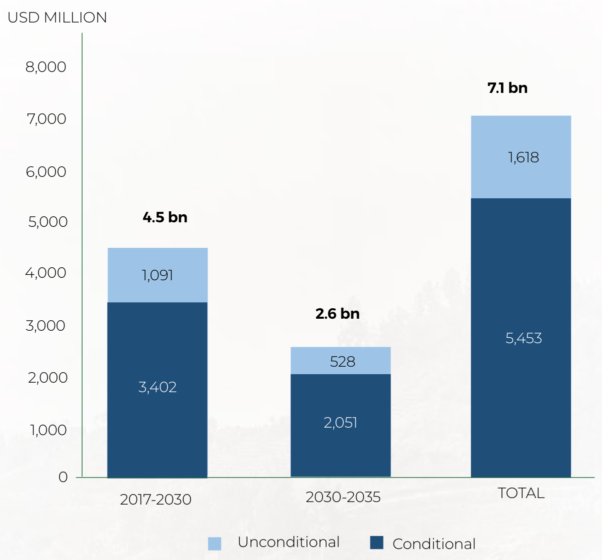
Over the past four decades, Rwanda has experienced a clear warming trend, as well as shifts in rainfall patterns (Meteo Rwanda, 2023). This is already leading to increases in slow-onset events with rising impacts. During the same period, Rwanda has experienced a significant rise in the number and severity of extreme weather events. For example, the floods and landslides during May 2023 resulted in 131 fatalities and US several hundred million in economic damages and economic losses (MINEMA, 2023; World Bank, 2023). There is increasing evidence that these extreme events can be attributed to the changing climate.
These trends indicate that Rwanda’s residual impacts; Loss & Damage (L&D); are growing faster than international mitigation and domestic adaptation measures can address. Without a dedicated policy response, these impacts will exceed both the “soft limits” (where options may exist but are currently not available) and “hard limits” (where no adaptive actions are possible to avoid intolerable risks), though these will vary with different levels of warming/future climate scenarios.
To bridge this gap, Rwanda had Rwanda has included action to address loss and damage in the NDC 3.0 and aligned it with emerging international mechanisms, namely the COP28 Loss & Damage Fund, the Warsaw International Mechanism, and support from the Santiago Network. By integrating these frameworks into a coherent national strategy, Rwanda seeks to build capacity and mobilize finance to address unavoidable climate impacts.
This section defines Loss & Damage in Rwanda’s context, quantifies the current and projected magnitude of slow-onset and extreme weather events, reviews institutional and policy responses, and proposes interventions, indicators, and targets for NDC 3.0.
Rwanda’s topography and climatic zones create distinct geographic patterns of L&D across the country, as shown in the figure below. The western highlands, with over 1,500 mm of annual rainfall and steep slopes, are hotspots for slow-onset erosion and rain-triggered landslides. In contrast, the eastern lowlands receive less than 800 mm of rain annually and face recurrent meteorological and agricultural droughts. The mid-country have moderate erosion risks and also experience episodic flash-flood hazards along major river corridors.
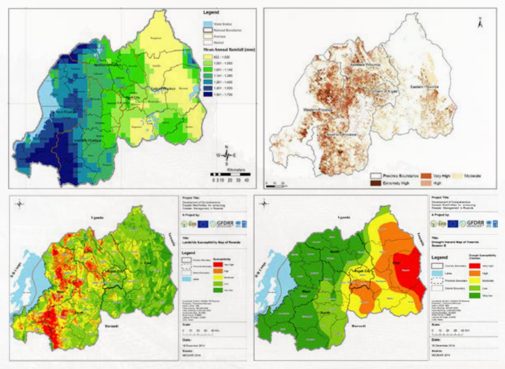
Sources: Meteo Rwanda, 2024; RWB and IUCN, 2022; MIDIMAR, 2015.
Slow-Onset Events (SOE) are risks that unfold gradually over time. The UNFCCC has identified eight slow onset events (Decision 1/CP.16), but as a landlocked country, Rwanda is not affected by sea-level rise or ocean acidification, and it does not have glaciers. The main SOE are considered below.
In Rwanda’s steep, hilly landscapes, one of the most important slow onset events is land degradation, particularly soil erosion. National level analysis estimate that over 1 million ha of the country are at high risk of soil erosion, with average topsoil losses of 25 tonnes per ha per year. This includes more than 56,000 ha which are affected by gully formation and 55,000 ha by rill erosion (RWB & IUCN, 2022), processes which irreversibly change the local terrain. This soil erosion leads to significant economic and non-economic losses. The direct impact of soil erosion on crop yields in Rwanda has been valued at approximately USD 53 million annually, with additional costs from the loss of topsoil and downstream damages to hydroelectric facilities (RWB & IUCN, 2022). In addition to these market impacts, the release of soil-stored carbon and the loss of biodiversity represent substantial non-economic losses, undermining ecosystem services that are essential for rural communities, including water filtration, nutrient cycling, and climate regulation.
While soil erosion is determined by many factors (including vegetation cover, topography, gradient, land management and soil type), it is driven primarily by rainfall and especially heavy rainfall (due to its erosivity). Climate change increases rainfall intensity, due to the general relationship that higher temperatures increase the water holding capacity of air by approximately 7% per degree Celsius of warming (Coumou et al., 2024). These increases are also seen in the ENACT’s data, which reports rising trends of heavy rainfall intensity in Rwanda. Climate change is therefore already a major contributing factor to rising soil erosion and current loss and damage, and these are projected to rise in the future with climate change, increasing the impacts above.
The east of Rwanda has low rainfall levels and experiences periodic droughts, amplified by ENSO cycles. A major drought event happened in 2016, and there have also been smaller events in more recent years. The impact of droughts are not captured within the national recording system. The economic losses of these events are associated with the agricultural losses (crops and livestock) while the non-economic losses include fatalities, injuries and disease outbreaks, as well as damage to biodiversity and habitats. Earlier studies estimate annual average agricultural, livestock and dairy losses are USD 65 million per year (2.2% of total agricultural production value) (Giertz et al., 2015; MIDIMAR, 2015), and also lead to non-economic impacts such as malnutrition, waterborne diseases.
There have been attribution studies on drought extremes and rainfall variability in East Africa, though these show varied conclusions, with some but not all studies identifying a contributing role of climate change (Clarke et al. 2023).
The rising temperatures and increasing numbers of hot days in Rwanda are starting to have additional slow onset impacts, including rising economic losses from increased cooling demand and electricity use, reduced labour productivity and negative impacts on crop yield, as well as non-economic losses including the effects on heat-related mortality and morbidity. There are projections of the future economic costs of these impacts in the CCDR (World Bank, 2022), which shows these will be significant, with rising L&D unless mitigation and adaptation actions are scaled up. There are also growing risks of L&D from rising temperatures and climatic shifts on Rwanda’s unique biodiversity and the ecosystem services these provide.
Rwanda has nine protected areas covering 9% of the country, but also targets to expand national parks to contribute to the global target of protecting 30% of land (and sea) by 2030. The country has extremely diverse habitats and ecosystems that range from humid montane forests to savannahs, lakes, rivers and wetlands, and this includes iconic species, notably the mountain gorilla, which are important for tourism revenue. These ecosystems are extremely vulnerable to climate change and may face hard limits of adaptation in the future.
Rwanda experiences high levels of extreme weather events. The country set up a network of data collection and a systematic recording system in 2016, which provides robust evidence on the impact of these events.
Intense rainfall on steep slopes, especially along the Nile-Congo watershed, triggers frequent land movements and landslides. These lead to economic losses from damage and destruction of properties, as well as to crops, roads, bridges and other infrastructure.
They also lead to non-economic losses including fatalities, injuries, and damage and destruction of the environment and cultural sites (MIDIMAR, 2015). While landslide risk is determined by a number of factors (slope, land cover, soil type, etc.) rainfall is a major factor in landslide risk, both from heavy rainfall but also the cumulative rainfall over time, and climate change is projected to increase these extremes (see soil erosion discussion above).
Rwanda experienced particularly devasting landslides during 2023 (see Box 1), though there were also many and major landslide events during 2016, 2018 and 2020 (see Figure 7.2). Attribution analysis of the 2023 event (Kimutai et al., 2023) investigated the role of climate change, especially given the unprecedented rainfall levels: this concluded that an increase in intensive precipitation was in line with climate change projections, but that it was not possible to conclusively attribute a role to the 2023 because of data gaps, though this would now be possible with the ENACT data.
River and surface (flash) floods are a regular occurrence in Rwanda, though they tend to increase during El Niño episodes. The primary economic losses are associated with property and infrastructure damage as well as damages to agricultural production, while the non-economic losses include fatalities, injuries and disease outbreaks, as well as damage to the environment and cultural heritage. Climate change has the potential to increase the intensity as well as the frequency of floods events (affecting the return periods of major events), though as with other extremes, the impact (L&D) of any event is influenced by exposure and vulnerability, and underlying socio-economic trends and land-use policy.
Besides 2023 (see Box 1), there was major flooding in Rwanda in 2016, 2018 and 2020, and most recently the floods during 2024. Kimutai et al. (2024) identified that the heavy rains and flooding in East Africa in 2024 were made twice as likely, and 5% more intense due to human influence on the climate.
In May 2023, Rwanda experienced severe floods and landslides triggered by heavy rainfall. This event, along with high rainfall in late April and early May, led to unprecedented landslides and floods, particularly along the Nile-Congo divide. There were 131 reported fatalities and over 110 injuries (MINEMA, 2023). The floods and landslides damages costed an estimate of USD 160 million and losses of USD 34 million (MINEMA, 2023).
The disasters caused significant macroeconomic losses, reducing direct production by USD 34 million and GDP by 0.2%. Losses to infrastructure were subsequently estimated at USD 156 million, equivalent to about 0.55% of the total capital stock (World Bank, 2023). A post-disaster needs assessment by the Government of Rwanda estimated it would need RWF 518.58 billion (USD 415 million) to recover from the damages and economic losses (MINECOFIN, 2023).
Rwanda experiences strong windstorms, which can lead to fatalities, and damage roofs, power lines, and crops. There are also hailstorms which particularly damage agricultural crops. Wildfires were infrequent, but are increasing, though annual costs are modest at present. Rwanda has not historically experienced very hot days and heatwaves, and the main impacts are associated with slow onset warming (see above).
Based on the recorded data, between 2016 and 2023, extreme weather events in Rwanda caused 979 fatalities, including 463 deaths from landslides and 516 from floods, heavy rains and storms. It also caused 970 injuries (238 from landslides, 639 from floods, heavy rain and rainstorms, and 92 from windstorms) (MINEMA, 2023).
These direct impacts translate into economic losses, lost wages, healthcare and funeral costs, asset repair, non-economic losses, grief, reduced well-being and weakened community cohesion. However, this does not account for wider effects such as service disruptions (e.g. transport delays, power outages), macroeconomic burdens (displacement, reconstruction spending), livelihood interruptions (agricultural and informal sector losses) or cultural and psychosocial damages. Moreover, poorer households face even greater risk because they often live in landslide- and flood-prone areas, occupy less durable housing, and depend heavily on agricultural livelihoods.
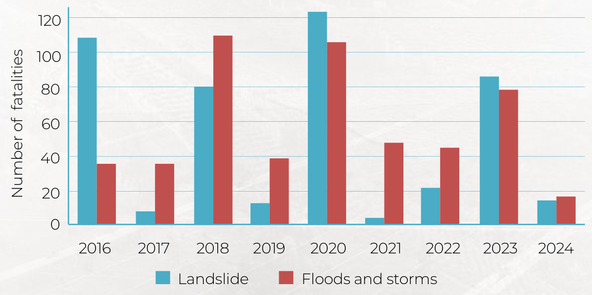
Source: MINEMA, 2023
Over the same period (2016 to 2024), extreme weather events damaged or destroyed 58,760 homes, an average of 6,500 per year, but with peaks in 2018 and 2023 (MINEMA, 2023). These lead to direct economic costs from the damage to property. They also lead to significant non-economic losses, for example, these impacts lead to the displacement of large numbers of people (with 18,000 alone moved to temporary accommodation in 2023) with associated health, well-being and livelihood impacts.
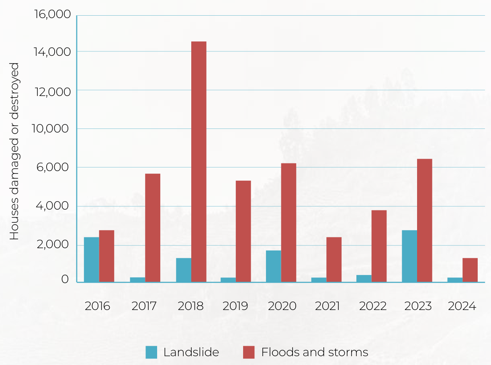
Source: MINEMA, 2023
These extreme weather events also had major impacts on infrastructure. There was damage recorded to 443 road segments and 446 bridges, which required major repairs and disrupted travel. There was also damage to 105 water-supply installations and water treatment plants, and to 438 electrical transmission lines. These events also damaged 22 health centres and 136 local administration buildings. This damage also affected infrastructure services, including transport power provision, water supply and sanitation, and critical emergency response capacity (MINEMA, 2023).
Year |
Roads section |
Bridges |
Water supply |
Transmission lines |
Health centres |
Administrative offices |
2016 |
2 |
40 |
39 |
1 |
1 |
9 |
2017 |
13 |
49 |
10 |
73 |
3 |
17 |
2018 |
32 |
64 |
1 |
25 |
3 |
11 |
2019 |
30 |
40 |
6 |
70 |
1 |
20 |
2020 |
154 |
103 |
26 |
87 |
4 |
17 |
2021 |
43 |
39 |
11 |
58 |
3 |
12 |
2022 |
71 |
39 |
1 |
69 |
1 |
19 |
2023 |
31 |
32 |
8 |
25 |
5 |
24 |
2024 |
67 |
40 |
3 |
30 |
1 |
7 |
Total |
443 |
446 |
105 |
438 |
22 |
136 |
Source: MINEMA, 2023
These extreme events also affect the agriculture sector. Between 2016 and 2024, the combined effects of landslides, heavy rain, floods, rainstorms, windstorms and hailstorms led to the damage of 50,000 ha of crops (an annual damage of 5,530 ha), and there were additional impacts on livestock. These were compounded by the periodic droughts, discussed above, which had much higher impacts in major drought years, especially because over 90% of agriculture is rain-fed.
To assess the scale of these extreme weather events, the NDC Secretariat used the data above and assessed:
Economic loss and damage. This assessed the market-based impacts of extremes, including property damage, crop losses and infrastructure damage, using repair and replacement costs.
Non-economic loss and damage. This assesses the non-market impacts and changes in the risk of fatalities, and lost productivity and treatment costs for injuries.
Note that this analysis does not include the wider losses, including disruption to services (e.g., travel time disruption, lost electricity load) or the wider macroeconomic impacts of these events. However, for a number of the extreme event years, notably 2018, 2020 and 2023, additional information does exist with additional information from post disaster needs assessments (GoR, 2018; 2023) and economic analysis (World Bank 2022; 2023).
The analysis estimates a cumulative Loss and Damage of approximately USD 1.2 billion over the period of 2016–2024, an average of USD 135 million per year. However, the impacts were very severe in major disaster years (e.g., 2018, 2020 and 2023) which experienced intense weather extremes (NDC Secretariat, 2024).
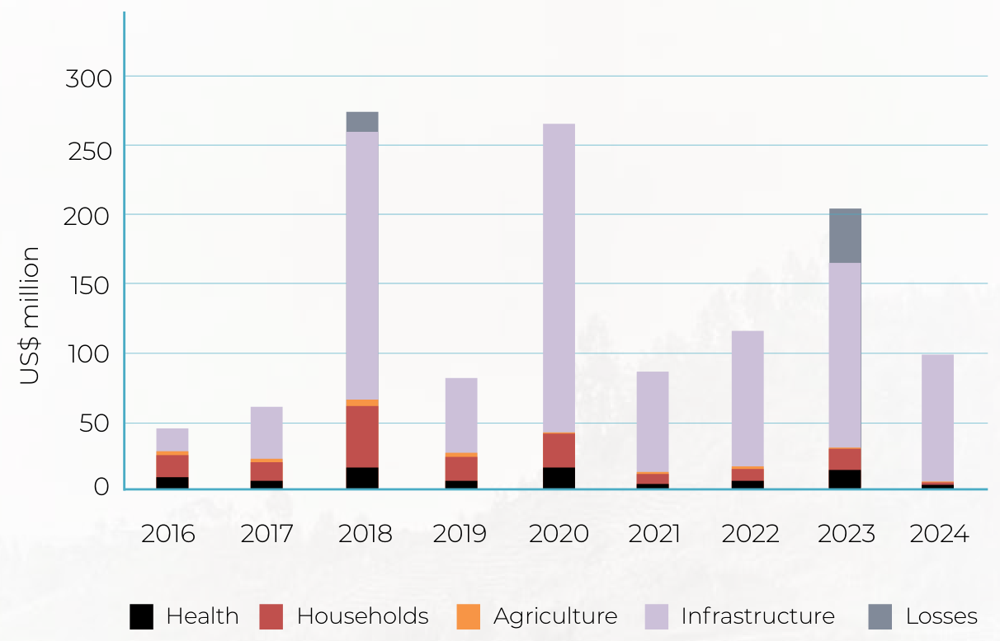
Note: Analysis based on MINEMA database and unit costs, with additional infrastructure damages and losses for 2018, 2020 and 2023, and extrapolated infrastructure damages for other years.
It should be stressed that this loss and damage does not affect all households equally. A recent household survey has been undertaken in Rwanda to assess the economic and non-economic impacts of extreme events (ECONOGENESIS, 2025). This finds the economic and non-economic losses are much higher (in relative terms) among women and among the poorest households, as a proportion of income. This highlights the urgent need for L&D support to address the most vulnerable.
Finally, climate change will exacerbate these extremes in future years and Rwanda will experience more intense rainfall, increasing flood risks, and more extreme heat. This will increase the exceedance of the soft limits of adaptation and brings increased risk of also exceeding the hard limits of adaptation.
Rwanda’s institutional framework for Loss & Damage includes climate governance, finance, disaster risk management, and social protection:
Climate governance & finance: REMA leads the Paris Agreement negotiations, while the Rwanda Green Fund mobilizes climate finance under the Ministry of Environment.
Disaster management: MINEMA manages disaster preparedness, response, and recovery through a coordinated planning and emergency operations structure.
Extreme-event risk reduction: There is a Multi-Hazard Early Warning System (MHEWS) working experts network called the National Emergency Command Center under the MINEMA. Under the MHEWS, Rwanda Meteorology Agency issues warning on wind, rain, and thunderstorm then the flood monitoring and warning are conducted by Rwanda Water Resources Board.
Despite these measures, the increasing frequency and severity of events require more resources. To enhance resilience and support affected communities, NDC 3.0 must establish a dedicated Loss & Damage finance stream, separate from mitigation and adaptation budgets. Table 7.2 below outlines four priority interventions to strengthen Rwanda’s L&D response. The interventions create a cohesive L&D response framework integrating financing, early warning systems, technical expertise, and data integration.
Rwanda has identified the need for finance through the period to 2035 to address critical gaps in its loss-and-damage architecture, distributed across the following strategic interventions:
Loss & Damage Financing: Rwanda aims to position itself to effectively access resources from the FRLD through the Rwanda Green Fund window. This will be achieved by actively engaging in global climate negotiations, enhancing national readiness, and identifying strategic pathways for developing high-quality proposals. These proposals will be aligned with the emerging access modalities for climate-related loss and damage financing, ensuring that Rwanda can mobilize timely and impactful support for vulnerable communities.
Success will be measured by the percentage of international funding
proposals approved and the total resources secured, directly advancing SDG 13 on climate action and Sendai Framework Target 2 on enhanced financial protection against disaster losses. The financing will earmark funds for projects that provide rapid assistance to the most vulnerable households to minimise loss and damage impacts, especially through nationally led existing mechanisms (including social protection systems) where possible.
Real-Time NDIMS Upgrade (USD 28 million): Transforming the National Disaster & Incident Management System from a 24-hour reporting lag to sub-six-hour responsiveness requires a GIS-enabled dashboard, AI/ML hazard detection, and nationwide sensor integration. This investment strengthens Sendai Priority 4 on preparedness and SDG 9 by embedding resilient, innovation-driven infrastructure into national disaster management.
Santiago Network Technical Assistance (USD 4.7 million): Partnering with the UNFCCC’s Santiago Network, Rwanda will co-develop and pilot a Technical Assistance Roadmap by 2030—delivering five to ten cross-sector workshops and initial risk assessments—and fully operationalize support by 2035. Progress will be tracked by the number of workshops delivered and assessments completed, aligning with SDG 17 on global partnerships and Sendai Priority 1 on risk understanding.
Integrated Loss & Damage Data Platform (USD 18 million): A
unified National Climate-Risk Database will be operational by 2030, standardizing data-sharing among MINEMA, MINALOC, REMA, Meteo-Rwanda, and NISR, and will be upgraded by 2035 for real-time feeds, quarterly analytics, and a 50% improvement in assessment accuracy. This platform underpins evidence-based planning under SDG 11 on resilient cities and fulfils Sendai Priority 2 on strengthened risk governance.
SN |
Intervention |
Indicator |
Baseline |
Targets |
Funding estimates (USD) |
Alignment with SDGs and Sendai framework |
|
2030 |
2035 |
||||||
1 |
Rwanda will position itself to effectively access resources from the Fund to Respond to Loss and Damage through the Rwanda Green Fund window. |
Number of proposals submitted and funded through the Loss & Damage Fund |
Proposals submitted: 0 |
1 |
3 cumulative proposals |
9.5 million |
SDG 13 on climate action and Sendai Framework Target 2 on enhanced financial protection against disaster losses |
2 |
Upgrade Rwanda’s NDIMS into a real-time, GIS-enabled platform with AI/ML analytics and countrywide early-warning links |
Time (hours) from hazard detection (sensor or report) to its appearance in NDIMS |
~24 hours |
Upgrade NDIMS to a fully operational system that includes real-time data collection, an interactive dashboard, ≤ 6 hours |
- |
28 million |
Sendai Priority 4 on preparedness and SDG 9 by embedding resilient, innovation-driven infrastructure into national disaster management. |
3 |
trengthen institutional capacities and engage with the Santiago Network on loss and damage to access technical expertise in climate risk assessment, capacity building, and loss and damage evaluation |
Completion and operationalization of a technical assistance roadmap. Number of capacity-building workshops and technical assessments completed with Santiago Network support. |
No technical support has been provided by the Santiago Network, leaving gaps in climate risk assessments and capacity development. |
Develop and pilot a Technical Assistance through delivering five to ten cross-sector workshops and initial risk assessments |
101 |
2.25 million |
SDG 17 on global partnerships and Sendai Priority 1 on risk understanding. |
4 |
Enhance coordination among key institutions (MINEMA, MINALOC, REMA, Meteo-Rwanda, NISR) for data integration to consolidate loss and damage data for improved risk assessments |
Existence of an operational, integrated national climate risk assessment database. |
Coordination between institutions is limited, resulting in fragmented loss and damage data collection |
Establish a national climate-risk database for loss and damage with standardized data-sharing and coordinated reporting. |
Upgrade database for real-time integration, quarterly reports, and a 50% increase in assessment accuracy. |
18 million |
SDG 11 on resilient cities and fulfils Sendai Priority 2 on strengthened risk governance. |
Frequency of data sharing and coordinated reporting among institutions |
The Enhanced Transparency Framework (ETF) established by the Paris Agreement requires an MRV system to transparently report progress made towards the targets defined in Rwanda’s NDC and to track the implementation of mitigation and adaptation measures, as well as means of implementation including climate finance.
Under the ETF, Parties to the Paris Agreement are required to submit Biennial Transparency Reports (BTR) every two years. These provide the principal means by which Parties report on their NDC implementation progress. Rwanda’s first BTR (BTR1) was submitted in December 2024 and included information on its national GHG inventory, progress towards NDC implementation, policies and measures, climate change impacts and adaptation, levels of financial, technology development and transfer and capacity-building support, capacity-building needs and areas of improvement.
The national MRV framework developed for the 2020 NDC has been revised and updated to be consistent with these and more recent international requirements. This will allow Rwanda to more effectively track progress of its mitigation and adaptation measures consistent with the Paris Agreement ETF and the MPGs.
Figure 8.1 below summarises these institutional arrangements for tracking NDC implementation.
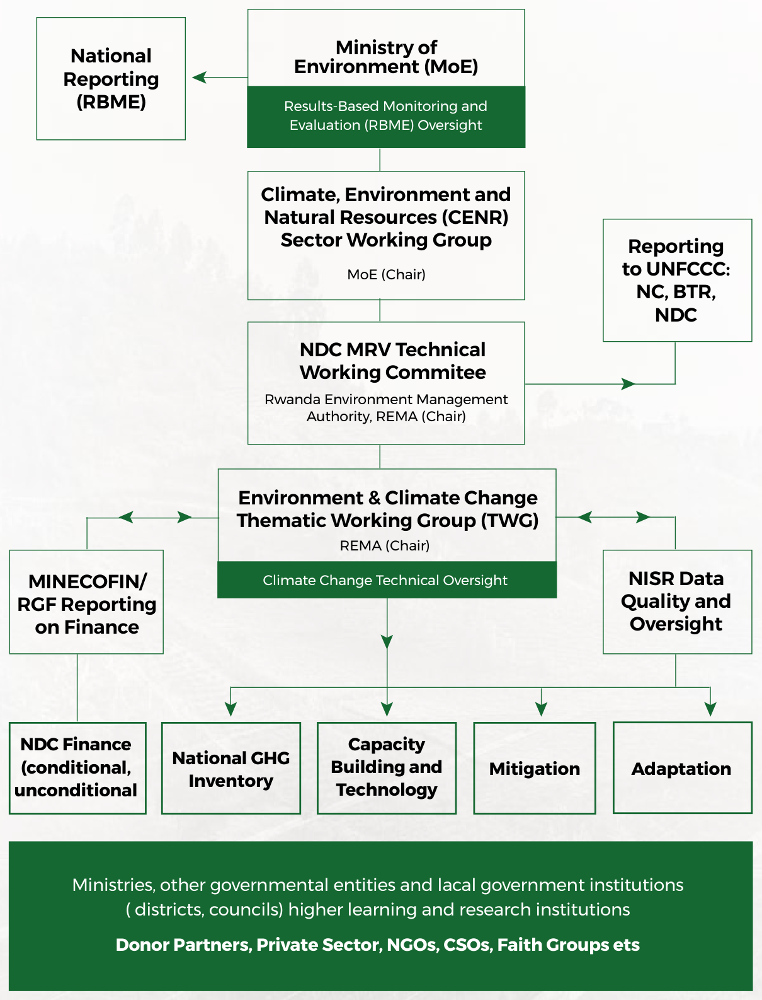
Rwanda has put in place a robust national planning process coordinated by the Ministry of Finance Economic Planning and Research (MINECOFIN) through which Sector Working Groups (SWGs) track the implementation of sector priorities. The SWGs hold semi-annual meetings and workshops for progress reporting through Joint Sector Review consultative sessions.
The Ministry of Environment (MoE) chairs the Climate, Environment and Natural Resources (CENR) SWG that has the responsibility to monitor and evaluate the implementation of the NDC through regular stakeholder consultative engagement. Under MoE, agencies organise Thematic Working Group (TWG) sessions to supports policy implementation including the monitoring and evaluation, and progress reporting on sub-sector priorities. Rwanda Environment Management Authority (REMA) has the overall responsibility for, and chairs, the Environment and Climate Change Thematic Working Group (E&CC TWG) with technical oversight over implementation of the country’s climate change priorities.
The E&CC TWG provides the platform for guiding the analysis, development and updating of Rwanda’s mitigation and adaptation priorities. As the Chair of the E&CC TWG, REMA appoints the members of the Steering Committee that endorses the national NDC MRV framework. Therefore, the E&CC TWG forum working through the NDC MRV Steering Committee serve as the national coordinator for all national institutions that implement mitigation and adaptation measures, as well as finance, capacity building and technology transfer arrangements to support the operationalize of the NDC.
These arrangements, and the specific organisational roles, are described in further detail below.
REMA acts as the chair of the Technical Working Committee for Rwanda’s NDC MRV, and its members are nominated by respective NDC sector institutions. The Committee’s mandate includes the following:
Review and establish objectives for the committee(s), Terms of Reference, membership and overall working modalities of the committee, including the endorsement and subsequent reporting of the NDC MRV at both national and international levels;
Provide advice and feedback on scope, schedule, cost and quality concerns, or guidance on program priorities, that arise during the planning, design and implementation of the NDC measures;
Facilitate access to resources necessary to review and report on NDC tracking and approve measures and projects at key milestones;
Review and examine studies and research activities in line with the NDC to facilitate quality assurance and alignment with strategic priorities;
Develop and operationalize effective NDC MRV communications plans; and
Review mid-term progress toward NDC 3.0 targets.
The Results-Based Monitoring and Evaluation (RBME) system is the principal platform for information and data monitoring and management for the CENR SWG chaired by MoE. All climate change relevant data including that related to the NDC MRV framework as managed and reported by the E&CC TWG will be processed and accessed through the RBME. The NDC MRV Technical Committee plays a critical role in national level data and information generation and reporting and is involved in data gathering, transparency, and verification. The committee ensures that Rwanda’s NDC MRV system links mitigation, adaptation, and finance as well as support for capacity building and technology transfer as critical aspects of NDC implementation.
The National Institute of Statistics Rwanda (NISR) is central to national data collection and management process and has the role of validating all published national statistics. MINECOFIN has the role of tracking NDC-related finance flows. RGF as the national fund for environment and climate change, liaises with MINECOFIN to manage data on finance and provides a platform to access finance data and information for national reporting. Gender mainstreaming is a priority at all levels of policy and implementation and the NDC MRV will ensure gender disaggregated data is captured and reported.
The information required for MRV of the NDC is consolidated and managed using appropriate reporting protocols and formats for national level as well as international reporting. At the national level, data are monitored, analyzed, and reported semi-annually at the E&CC TWG and the CENR SWG (uploaded on the RBME system) using a national planning driven process coordinated by MINECOFIN to inform policy and strategic planning. REMA has longstanding experience in reporting to UNFCCC through National Communications (NC), BURs and BTRs.
The NDC MRV Technical Working Committee chaired by REMA is building on these experiences to coordinate the national agencies responsible for data generation and management of NDC reporting to the UNFCCC.
Based on the above, the tables shows the key data providers for tracking the NDC 3.0 according to mitigation, adaptation, loss and damage, and finance and support.
Mitigation |
|||
Line Ministry |
Activity /Indicator |
Lead Agency |
Key data providers /stakeholders |
MININFRA |
Energy related indicators |
REG |
REMA, RHA, RDB, MINECOFIN, RRA, RGF, MINALOC, RSB, MoH, private sector, civil society |
Transport related inidcators |
RTDA |
RURA, MINALOC, CoK, MINECOFIN, RGF, operators, REMA, MoE , Private sector transport operators, financial institutions, civil society |
|
Waste related indicators |
WASAC |
CoK, Districts, RURA, RHA, MoE , REMA, Private sector, NGOs |
|
MINICOM |
IPPU related indicators |
MINICOM |
MINECOFIN, MINAGRI, MoE, REMA, RGF, WASAC, NIRDA,RDB, REG, MINALOC, Private sector, civil society |
MINAGRI |
Agriculture related indicators |
RAB and RFA |
REMA, RFA, RURA, Private Sector, civil society, WASAC, LODA, Districts, higher learning and research institutions. |
MoE |
Forestry related indicators |
RFA and REMA |
RFA, REMA, NISR, RWB, RAB, Private Sector, civil society, higher learning, and research institutions. |
Adaptation |
||||
Theme |
Line Ministry |
Activity/Indicator |
Lead Agency |
Key data providers /stakeholders |
Water storage security |
N/A |
Water storage per capita (5.3 → 17.6 m³/capita by 2035 |
RWB |
MoE; MINAGRI; MININFRA; Meteo Rwanda; REMA; RAB; WASAC; NLA, CoK, Districts |
Catchment restoration |
N/A |
Erosion-prone land restored (332, 861 → 640, 000 ha by 2035) |
RWB |
MoE; REMA; RAB; districts; private sector, Districts |
Climate-resilient crops |
MINAGRI |
% of farmers using improved seeds (LSF: 85.7 → 100%; SSF: 35.9 → 66.9 %) |
RAB |
NAEB, REMA, private sector, civil society, extension services, Districts |
Irrigation expansion |
MINAGRI |
Area under irrigation (71 549 → 204,915 ha by 2035) |
RAB |
Districts, private sector, NLA, NAEB, RWB |
PES-based forestry |
MoE |
Area under PES schemes (3,000 → 68 460 ha by 2035) |
RFA |
REMA; districts; private sector |
Risk-informed planning |
MINALOC |
% land with detailed risk-informed plans (0 → 100 %) |
CoK and districts |
MININFRA; MoE; district planners |
Decent housing access |
MININFRA |
% urban population in planned settlements (40 → 60 %) |
RHA |
NISR; districts; private developers, CoK |
Improved drinking water |
MININFRA |
% villages with improved drinking water (80 → 100 %) |
WASAC |
MININFRA; WASH partners; MINALOC, MoH |
Landslide resilience |
MININFRA |
km of roads vulnerable to landslides (67,683 → 384 km by 2035) |
RTDA |
Meteo Rwanda; districts; CoK, MINEMA, RHA |
Disease outbreak prevention |
MoH |
Annual incidence rate for malaria (cases per 1,000 population) |
RBC |
Meteo Rwanda; Civil Society; MINALOC; local health units |
Digital health and infrastructure |
MoH /MINICT |
% of facilities using fully functional Electronic Medical Record (EMR) systems |
MINICT |
MoH; hospitals; health centres |
NCD adaptation & early detection |
MoH |
Probability of premature mortality from NCDs (% dying between 30–70) |
MoH |
MoH; NISR; academic institutions; civil society |
Green mining practices |
RDB |
% mining companies with climate-compatible practices ( 74.5 → 100 %) |
RMB |
private sector; civil society |
Multi-hazard early warning |
MINEMA |
Number of pilot EWS developed (2 → 22 by 2035) |
MINEMA |
Meteo Rwanda; RWB; RFA; district emergency units |
Loss and damage |
||||
Intervention |
Line Ministry |
Activity/Indicator |
Lead Agency |
Key data providers /stakeholders |
Loss & Damage Financing |
MoE |
3 of proposals submitted and funded |
Rwanda Green Fund |
MINECOFIN; RFL |
Upgrade NDIMS to real-time, GIS-enabled early-warning platform |
MINEMA |
Detection‐to‐ dashboard time (≈24 h → ≤ 6 h by 2030) |
MINEMA |
Meteo Rwanda, REMA; RWB; CoK, district emergency units; MINICT |
Engage Santiago Network for technical assistance |
MoE |
Number of workshops & risk assessments completed (0 → 5–10 by 2030; roadmap operational by 2035) |
REMA |
National institutions; private sector; academia; Santiago Network, MINEMA |
Integrate loss & damage data across institutions |
MINEMA |
National climate‐risk database operational & reporting frequency (fragmented → real‐ time, quarterly reports) |
MINEMA |
MINALOC; REMA; METEO Rwanda; NISR; RWB |
Enhanced Coordination for Climate-Induced Loss & Damage |
MINEMA |
Operationalisation of NADIMATEC, NPDM, DIDIMACs & SEDIMACs (0 → 4 platforms operational by 2035); six joint response protocols (0 → 6); officials trained (0 → 500) |
MINEMA |
NADIMATEC; NPDM; DIDIMACs; SEDIMACs; district and sector authorities |
Finance and support |
|||
Line Ministry |
Activity/Indicator |
Lead Agency |
Key data providers /stakeholders |
MINECOFIN |
Total amount of finance mobilized for Green Investments (by major category – climate change mitigation; green Energy etc.) |
MINECOFIN |
REMA, RGF, BRD, MoE |
MoE |
Capacity building technical support and technology transfer |
REMA, RGF |
MoE, RGF and all NDC supporting institutions and organizations; MINECOFIN |
In order to fully implement the mitigation and adaptation measures contained in this NDC, Rwanda will require finance, capacity building, and technology transfer. This section provides an overview of these means of implementation.
Rwanda’s NDC 3.0 builds on a solid foundation of institutional integration, policy alignment, and climate investment mechanisms established since the revised NDC of 2020. The updated NDC recognizes that successful implementation of its mitigation and adaptation objectives depends on strengthening three core enablers: finance, capacity building, and technology transfer. These pillars are crucial for translating national ambition into effective and locally responsive action, fully aligned with the country’s development priorities under the NSTs.
NST1 delivered important progress but also faced persistent gaps in climate implementation. Key challenges included an estimated climate finance gap of USD 6.2 billion, capacity deficits, particularly at district level where implementation occurs, and limited access to and use of appropriate technologies. The lack of adequate technical capacities, monitoring tools, and institutional coordination at subnational levels slowed the pace of NDC integration. In response, NST2 emphasizes resilience-building, catalysed by, among other climate change challenges, the devastating climate-related disasters of May 2023 that claimed over 130 lives and caused damages exceeding USD 415 million in the northern, western, and southern provinces. These events underscore the urgency of operationalizing climate interventions to meet set targets at all levels, particularly through risk-informed planning, enhanced capacities, and scaled-up finance.
NDC 3.0 is strategically designed to address these implementation barriers. On finance, Rwanda has transitioned from ad hoc project funding to a programmatic, blended-finance approach. Key platforms include the IMF-supported Resilience and Sustainability Trust (RST), which has already mobilized USD 319 million; the Ireme Invest facility scaling up to USD 500 million by 2028; and the Intego, set up as an NDC financing platform serves as a concessional finance window supporting public sector climate projects.
These mechanisms are reinforced by the Rwanda Green Taxonomy and the recently launched climate budget tagging system embedded in all national budget entities. Collectively, these measures will contribute to meeting the NST2 projection of USD 3 billion in climate finance by 2029, while supporting Rwanda’s ambition to accelerate and diversify climate finance flows toward 2030
On capacity, Rwanda is intensifying support to local governments to plan, implement, and monitor climate actions. The Green Climate Fund-supported “Strengthening Climate Resilience of Rural Communities in Northern Rwanda” (Gicumbi Project) is a flagship example. It delivers integrated landscape restoration, climate-resilient agriculture, and community infrastructure, serving as a model for district-driven adaptation nationwide. Lessons from the Gicumbi Project have informed guidelines for scaling local adaptation and are being adapted across other districts through among other avenues, the RGF’s Intego facility. In addition, the World Bank supported the mainstreaming of climate action into District Development Strategies (DDSs) through a pilot initiative financed under the Climate Action Enhancement Package (CAEP). This pilot, implemented in four secondary cities, focuses on integrating Rwanda’s NDC into district-level development plans provided key lessons and will serve as input towards strengthening local climate planning and action.
On technology, NDC 3.0 supports both transfer and diffusion of adaptation and mitigation technologies, including water harvesting systems, early warning tools, e-mobility platforms, and low-emission agricultural technologies. Rwanda has deployed a national carbon registry and satellite-enabled MRV system, enabling real-time data to support implementation, transparency, and access to high-integrity carbon markets.
In summary, Rwanda’s NDC 3.0 provides a robust, results-oriented framework to support the full delivery of NST2 climate priorities. By scaling climate finance, deepening institutional and local capacities, and facilitating accelerated technology uptake as described under the following specific headings, it creates a practical and country-owned pathway to achieve enhanced climate resilience and low-carbon development.
Rwanda’s NDC 3.0 builds on the foundations of the 2020 NDC, which outlined an estimated investment need of USD 11 billion by 2030 to achieve a maximum 38% emissions reduction target compared to BAU from conditional and unconditional measures.
As of 2024, approximately USD 4.8 billion had been mobilized through a mix of domestic sources (private and public), bilateral and multilateral partnerships, and innovative instruments, leaving a climate finance gap of USD 6.2 billion to close by 2030.
Key achievements include the operationalization of Ireme Invest, which is leveraging blended finance to crowd in private sector capital for green growth sectors, and Intego, under the RGF, which anchors public climate finance flows, including for Nature Based Solution (NBS), biodiversity, and adaptation infrastructure. Strategic milestones such as Rwanda’s access to USD 319 million from the IMF’s RST, and the rollout of the Rwanda Green Taxonomy (phased in through 2023 and 2025), have enabled clearer investment classification and policy alignment. The mainstreaming of Climate Budget Tagging (CBT) into national and district budget systems has institutionalized the tracking of climate-related expenditures, while the NDC Implementation Framework now links priority actions directly to financing pathways. These backward-looking gains provide a robust springboard for Rwanda’s forward-looking ambition to scale up climate finance in support of its revised emissions reduction targets and climate-resilient development.
Despite these achievements, a significant scaling up of finance will be needed to implement the measures included in the NDC 3.0. The total cost for Rwanda’s identified NDC mitigation measures through 2035 is estimated at around USD 5 billion, and around USD 7 billion for adaptation priorities, representing a combined funding requirement of some USD 12 billion. Table 9.1 and Figure 9.1 below summarise the estimated funding needs over the two five-year periods through to 2035.
USD million |
2025-2030 |
2030-2035 |
Total (2025-2035) |
Mitigation measures |
|||
Unconditional |
242 |
278 |
278 |
Conditional |
2,251 |
2,190 |
2,190 |
Total |
2,493 |
2,467 |
2,467 |
Adaptation measures |
|||
Unconditional |
1,091 |
528 |
1,618 |
Conditional |
3,402 |
2,051 |
5,453 |
Total |
4,492 |
2,579 |
7,071 |
Combined total |
6,986 |
5,046 |
12,032 |
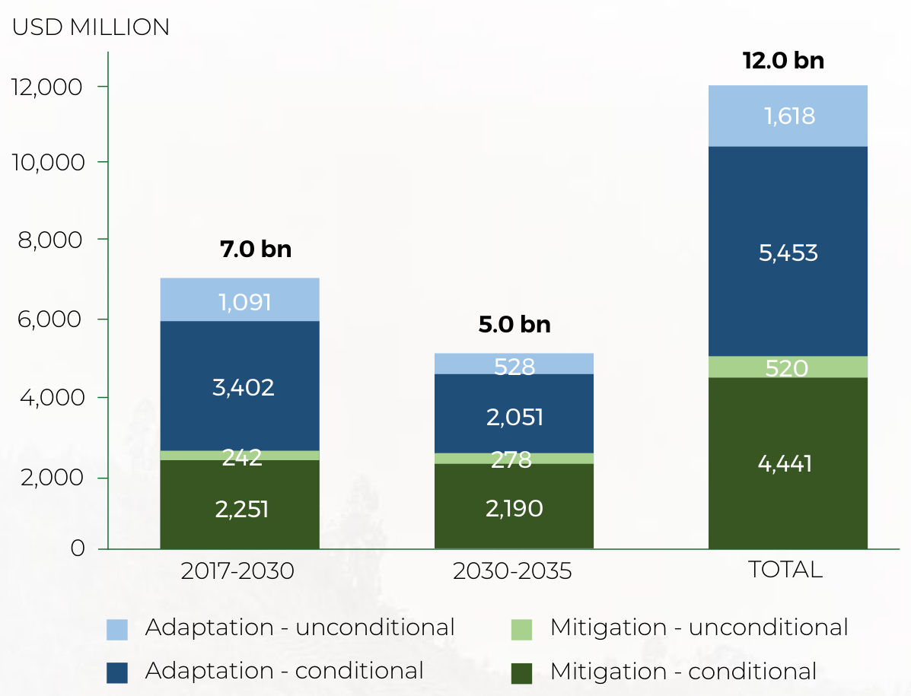
Rwanda’s strategic priorities for climate finance to implement NDC 3.0 build upon institutional reforms and strategic investments initiated during the implementation of the NDC 2.0. Key structural shifts, such as the adoption of the Climate and Nature Finance Strategy (CNFS), the development of the Rwanda Green Taxonomy, and the nationwide rollout of CBT, have been instrumental in aligning financial flows with national climate priorities.
The transition to a programmatic financing approach is guided by the Green Growth and Climate Resilience Strategy (GGCRS), emphasizing integrated, results-based financing aligned with national priorities. Operationalized through the NST2 for 2024–2029, this approach integrates climate resilience as a core pillar of development and serves as a framework to implement the revised GGCRS. In practice, this model ensures that NDC 3.0 actions are embedded into medium-and long-term development plans, facilitating the bundling of interventions into coherent investment packages eligible for blended finance, concessional support, and carbon market participation.
Platforms such as Ireme Invest and Intego exemplify this approach by de-risking investments, aggregating demand, and linking project-level actions to national-level priorities. To achieve these objectives, Rwanda targets scaling up domestic resource mobilization, leveraging concessional funds, expanding access to market instruments, and operationalizing carbon finance through Article 6 mechanisms.
Rwanda’s Climate Nature Finance Strategy (2024–2030) has defined strategic priorities for climate finance implementation targeting among other areas:
1. Domestic Fiscal Leverage: Expand Climate Budget Tagging (CBT) to all ministries and districts; implement the Rwanda Green Taxonomy and introduce green fiscal incentives.
2. Programmatic approach: The revised National Investment Policy provides a programmatic orientation to climate-proof national investment. Implementation of NDC3.0 will scale up programmatic investment plans building on sustainable land management, climate-smart agriculture, and the development of sustainable cities.
3. Blended Finance Vehicles: Scale Ireme Invest to USD 500 million and Intego to crowd-in private and concessional capital, respectively.
4. Capital and Carbon Markets: Issue Rwanda’s first sovereign green and sustainability linked bonds; and make use of Paris Agreement Article 6 framework to generate verified credits.
5. International Access and Guarantees: Maximize direct access through MoE and BRD accreditations with GCF; negotiate second IMF-RST tranche; and explore debt relief measures including debt-for-climate swaps.
6. Governance and Transparency: Operationalize Rwanda’s Climate Finance Cluster under the Public Finance Management Sector Working Group (PFM SWG) and Dashboard; implement ISSB-aligned disclosure and third-party audits.
Central to Rwanda’s strategic focus is the establishment of a predictable pipeline of investible projects through a programmatic approach. This strategy enables the bundling of interventions across sectors and regions, enhancing alignment with national priorities, achieving economies of scale, and attracting blended finance. By embedding investment plans within Sector Strategic Plans (SSPs) and District Development Strategies (DDSs), Rwanda ensures that climate actions are integrated into medium- and long-term development frameworks.
Complementing Rwanda’s programmatic approach to climate finance, the Climate Finance Dashboard serves as a critical tool for tracking financial flows. By providing real-time data and insights, it enables policymakers, investors, and stakeholders to assess progress, identify funding gaps, and make informed decisions to ensure alignment with Rwanda’s NDC 3.0 and NST2 objectives (CNFS, 2024).
As described above, Rwanda’s NDC 3.0 targets for both mitigation and adaptation comprise of unconditional and conditional components. The following sources of funding can be considered relevant to the conditional component:
Grants and philanthropy (e.g. non-recourse project finance, which could especially be anticipated in the LULUCF sector).
Market-based mechanisms (e.g. through the crediting of specific project activities with emission reductions units (ERs) under Article 6.2 or Article 6.4 of the Paris Agreement, and including transfers of ERs under the Carbon Offsetting and Reduction Scheme for International Aviation (CORSIA), with their treatment as international transfers of mitigation outcomes; ITMOs).
Other types of international funding mechanisms (e.g. results-based finance, without ITMOs, which may encompass ‘mitigation contribution’ A6ERs under Article 6.4 of the Paris Agreement; non-market mechanisms under Article 6.8 of the Paris Agreement; unauthorised voluntary carbon market (VCM) transfers of credits originating from domestic project activities).
It is critical that the Paris Agreement’s capacity building provisions are implemented successfully in Rwanda. Technology transfer and capacity building will be required to fully implement the mitigation and adaptation contributions committed in this NDC.
Rwanda’s revised NDC (2020) recognized capacity building as a foundational enabler for effective climate action. While progress was made in technical training and awareness at the central level, gaps remained in institutional coordination, subnational implementation, and sector-specific technical capabilities.
NDC 3.0 places a renewed emphasis on strengthening national and local capacities through the Capacity Building Strategy (2025–2035) to deliver on the increased ambition, particularly with a view to integrating climate and nature across development priorities, budgets, and investment pipelines.
The table below summarizes the thematic areas that will be supported by the pertinent institutions through implementation of the key actions (Table 9.2).
Thematic Area |
Activity/Indicator |
Lead Agency |
Subnational Capacity |
Identify and institutionalize climate focal points and develop programmatic climate investment plans that are implementable in all 30 districts. |
MINALOC, REMA, RGF, Districts |
Climate Planning & MRV |
Train planners, statisticians and relevant government officials on climate budget tagging, MRV, greenhouse gas inventories and NDC reporting aligned with Enhanced Transparency Framework (ETF) |
MINECOFIN, NISR, MoE |
Green Investment Readiness |
Develop a certified green finance training programme for financial institutions, public sector officers, and SMEs |
RFL, BRD, CMA, Rwanda Bankers Association |
Nature-Climate Linkages |
Build capacity of environment and land officers to integrate NBS and biodiversity indicators into sector and district plans |
MoE, REMA, RDB, Land Use Commission |
Climate-Resilient Health Systems |
Enhance capacity of health professionals and planners to assess, manage and respond to climate-sensitive health risks (e.g. disease surveillance, early warning, etc) |
MoH, RBC, REMA, WHO, Meteo Rwanda |
Disaster Risk Preparedness |
Equip district-level DPCs and local responders with climate-informed disaster planning and emergency response tools |
MINEMA, Rwanda Red Cross, RISA |
In addition, to enable the scale-up of long-term resilience and decarbonization, Rwanda will:
Strengthen institutions and coordination to drive the successful implementation of NDC3.0, ensuring Rwanda’s full ownership of climate action and ambitious goals.
Include climate finance and low-emissions development in civil service induction training.
Develop online modular courses (CPD-accredited) on Article 6, green taxonomy compliance, starting with operationalization of the implementation plan/roadmap launched in September 2025, and climate-smart technologies.
Partner with universities to expand climate and sustainability curricula, including executive training.
Create a public–private skill-sharing initiative to match sectoral needs (e.g., EV mechanics, solar installation, climate-smart agronomy).
A results-based monitoring framework will be established to track capacity-building activities under the NDC Implementation Framework. Key indicators will include: number of trained officials disaggregated by gender and level; number of districts with integrated climate plans; number of green finance-certified professionals; and incorporation of ETF-aligned indicators into sectoral MRV.
Rwanda’s NDC 2.0 made initial strides in deploying climate-relevant technologies, most notably solar photovoltaics, e-mobility pilots, and select precision agriculture solutions. However, adoption was constrained by financing gaps, limited technical capacity, and underdeveloped innovation ecosystems. NDC 3.0 elevates technology development and deployment as a central pillar of implementation, addressing both mitigation (e.g., renewables, sustainable transport, industrial efficiency) and adaptation (e.g., precision irrigation, early warning systems, and regenerative agriculture).
Technology adoption is gaining momentum under Rwanda’s broader climate strategy. In the energy sector, the government targets universal electricity access by 2029, up from 75% in 2023, with 25% to be sourced from off-grid renewable systems by 2030 (GoR, 2024c).
In transport, Rwanda’s e-mobility transition is supported by fiscal incentives, including tax exemptions on EVs and reduced tariffs for charging infrastructure. Over 500 electric motorcycles have been deployed in Kigali, and EV charging systems are being integrated into flagship developments such as the Green City Kigali project (GoR, 2023b).
In the agriculture sector, climate-smart technologies are being rolled out in alignment with national priorities. These include drones for precision farming, solar-powered irrigation, and digital platforms for weather and pest forecasting. PSTA5 sets a target of 8,000 ha under solar irrigation by 2029 and prioritizes the digitalization of extension services and agro-advisory platforms.
Within the health sector, Rwanda is demonstrating innovation through drone-based delivery of medical supplies, currently serving more than 400 remote health facilities. These interventions not only reduce emissions from logistics but also enhance the resilience of health systems (MINISANTE, 2023).
Looking forward, NDC 3.0 will deepen technology transfer by accelerating private-sector involvement, expanding innovation ecosystems, and localizing manufacturing where feasible. These measures will be supported by institutional reforms, including the establishment of a national climate technology innovation hub, enhanced MRV systems for tracking technology uptake and impacts, and stronger regional and “South–South” cooperation to access emerging solutions. Below is a summary table (Table 9.3) highlighting the priority interventions and the institutions that will support their adoption/deployment.
Thematic Area |
Activity/Indicator |
Lead Agency |
Energy |
Deploy rooftop solar on public buildings; introduce grid-tied battery pilots in 3 districts |
REG, MININFRA, BRD |
Transport |
Establish national e-mobility innovation hub; roll out 2,000 e-motorcycles with smart charging stations |
MoE, MINICOM, BRD, RURA |
Agriculture |
Scale precision irrigation and conservation agriculture via ag-tech start-ups and cooperatives |
MINAGRI, RAB, NIRDA, ICT Chamber |
Water and Disaster Management |
Operationalize IoT-based flood sensors and AI-powered early warning systems in 10 high-risk zones |
RISA, MINEMA, MoE, Meteo Rwanda |
Urban Systems |
Deploy nature-based cooling solutions (e.g., green roofs, shaded corridors) in 4 secondary cities |
MININFRA, RHA, City of Kigali, MoE |
Waste and Sanitation (Circular Economy) |
Introduce circular economy hubs in urban centres to recover, reuse, and recycle waste; deploy biodigesters and composting facilities |
MoE, MININFRA, RHA, REMA, Private Sector |
As Rwanda advances towards its climate resilience and low-carbon development objectives, the period from 2030 to 2035 is pivotal for scaling up the deployment and localization of climate technologies. Building upon the foundations laid in the previous decade, Rwanda aims to transition from technology adoption to innovation and manufacturing, fostering a robust ecosystem that supports climate tech entrepreneurship, research, and regional collaboration. This strategic shift is essential to meet the nation’s NDC targets and to stimulate green economic growth. Rwanda aims to:
Leverage the Climate Technology Centre and Network (CTCN) by 2030 to operationalize the National Cleaner Production and Climate Innovation Center (CPCIC).
Introduce climate tech accelerators and dedicated venture capital funds for green start-ups.
Localize manufacturing for priority technologies (e.g., solar kits, EV motorcycles) through Public-Private Partnerships (PPPs).
Expand “South–South” cooperation with CTCN and leading climate tech countries for R&D and exchange programmes.
Integrate Climate Technology Incubators into all Innovation Hubs and Tech Parks.
The following steps will help to support implementation:
Assess existing innovation infrastructure to identify integration opportunities.
Develop tailored incubation programs focusing on climate resilience and sustainability.
Monitor and evaluate the performance of incubated ventures to inform policy and program adjustments.
By implementing these practical actions, Rwanda aims to build a dynamic climate technology ecosystem that not only supports the achievement of its NDC targets but also positions the country as a key regional actor in climate innovation and sustainable development. Finally, the deployment of Artificial Intelligence (AI) through 2025-2035 could help Rwanda fight climate change in several ways. First, it can quickly analyse huge amounts of data, such as maps from satellites and records of greenhouse gas emissions, to identify the causes of warming and environmental damage.
Next, it can run fast computer models that show where floods, heatwaves, or droughts are most likely to occur. AI can also power early warning systems that detect unusual weather or disease risks and send alerts to communities or health centres immediately. By creating virtual copies of cities and landscapes, AI allows planners to test different adaptation ideas, such as where to build stronger roads or plant trees, before spending money. Finally, AI-driven tools can manage renewable energy more smoothly and predict when machines need maintenance, reducing breakdowns and additional emissions. In these ways, AI accelerates both the discovery of solutions and the strengthening of our communities against climate impacts.
Citepa (2025). Rwanda’s NDC Mitigation Implementation Status Report (2015– 2024). Paris.
Clarke, B., Otto, F. and Jones, R., (2023). When don’t we need a new extreme event attribution study? Climatic Change, 176(5), p.60.
Coumou, D., et al (2024). How can event attribution science underpin financial decisions on Loss and Damage? PNAS Nexus, Volume 3, Issue 8, August 2024. https://doi.org/10.1093/pnasnexus/pgae277
ECONOGENESIS (2025). Survey Results on the Economic Costs of Climate Hazards in Rwanda. Policy brief.
Giertz, A., Johnson, M., Smith, L., & World Bank Group. (2015). Rwanda agricultural sector risk assessment (Report No. 96290-RW). World Bank Group. Retrieved from https://documents1.worldbank.org/curated/en/525111468180254519/pdf/96290-WP-P148140-Box393232B-PUBLIC-TAP-Rwanda-ASRA-WEB-10062015.pdf
Government of Rwanda (GoR) (2018). Third National Communication under the UNFCCC. Report to the United Nations Framework Convention on Climate Change. Ministry of Environment. https://unfccc.int/documents/184307
GoR (2020a). Nationally Determined Contribution for the Republic of Rwanda (NDC 2.0). Republic of Rwanda, Kigali.
GoR (2020b). Rwanda Vision 2050. Kigali, Rwanda.
GoR (2023a). Revised Green Growth and Climate Resilience - National Strategy for Climate Change and Low Carbon Development. Kigali.
GoR (2023b). National Investment Policy. April 2023. Kigali.
GoR (2024a). Rwanda’s First Biennial Transparency Report (BTR). BTR1. Kigali: Ministry of Environment.
GoR (2024b). Second National Strategy for Transformation (NST2) 2024–2029. Kigali, Rwanda: MINECOFIN.
GoR (2024c). National Climate and Nature Finance Strategy of Rwanda 2024-2030. Kigali, Rwanda: MINECOFIN.
GoR (2025). Climate Change Data: Temperature Increase and Rainfall Fluctuations. Rwanda Environment Management Authority (REMA). Available at CCP: Data
Heaps, C.G., 2022. LEAP: The Low Emissions Analysis Platform. [Software version: 2024.4.0.15] Stockholm Environment Institute. Somerville, MA, USA. https://leap.sei.org
International Labour Organization (ILO) (2023). Decent Work for a Just Transition in Rwanda [Policy paper]. Kigali: International Labour Organization
International Organization for Migration (IOM) (2024). Migration, Environment and Climate Change: Contributions to NDC Implementation in Rwanda. Kigali: IOM Rwanda.
Intergovernmental Panel on Climate Change (IPCC) (2019). 2019 Refinement to the 2006 IPCC Guidelines for National Greenhouse Gas Inventories. Geneva, Switzerland.
IPCC (2014). Synthesis Report. Contribution of Working Groups I, II and III to the Fifth Assessment Report of the Intergovernmental Panel on Climate Change [Core Writing Team, R.K. Pachauri and L.A. Meyer (eds.)]. IPCC, Geneva, Switzerland, 151 pp.
IPCC (2023). Synthesis Report. Contribution of Working Groups I, II and III to the Sixth Assessment Report of the Intergovernmental Panel on Climate Change [Core Writing Team, H. Lee and J. Romero (eds.)]. IPCC, Geneva, Switzerland, pp. 1-34
Kimutai, J., Mbogo, P., & Ololo, I. (2023). Limited data prevent assessment of role of climate change in deadly floods affecting highly vulnerable communities around Lake Kivu. Available at: https://doi.org/10.25561/105152
Leiter, T. (2017). Is there a difference between MRV and M&E? PATPA Annual Retreat, Georgia, Deutsche Gesellschaft für Internationale Zusammenarbeit. Available at : https://transparencypartnership.net/sites/default/files/u2618/3-timo_leiteris_there_a_difference__between_mrv_and_me.pdf
Malik, M., Kayitesi, M., Hassani, Y., Rutaganda, J. M. V., Mukamwiza, L., & Musabyimana, G. (2024). Strengthening climate resilience for WASH in Rwanda (Version 1). Loughborough University. Available at: https://doi.org/10.17028/rd.lboro.28062218.v1
Meteo Rwanda (2023). National climate trends and projections. Government of Rwanda.
Meteo Rwanda (2024). National Climate Trends and Projections. Government of Rwanda.
MIDIMAR (2015). The National Risk Atlas of Rwanda. Kigali: MIDIMAR.
MINAGRI (2024). Ministry of Agriculture and Animal Resources. (2024). Fifth Strategic Plan for Agriculture Transformation (PSTA5) 2024–2029. Kigali, Rwanda: MINAGRI.
MINECOFIN (2021). National monitoring, evaluation and learning guidelines (detailed version). Government of Rwanda. Available at: https://www.minecofin.gov.rw/index.php?eID=dumpFile&t=f&f=21993&token=02a0407c26ab7c744a58e581881e5110c538837cphp?eID=dumpFile&t=f&f=21993&token= 02a0407c26ab7c744a58e581881e5110c538837c
MINECOFIN (2023). FRW 518.58 Billion Needed to Recover from Impact of Recent Floods and Landslides. Available at: https://www.minecofin.gov.rw/news-detail/frw-51858-billion-needed-to-recover-from-impact-of-recent-floods-and-landslides
MINECOFIN (2024). Ministry of Finance and Economic Planning (MINECOFIN). (2024). Private Sector Development and Youth Employment Sector Strategic Plan (PSDYE SSP) 2024–2029. Kigali, Rwanda.
MINEMA (2023). Latest updates on 2-3 May disaster. News article, 13 May 2023. Available at: https://www.minema.gov.rw/updates/news/latest-updates-on-2-3-may-disaster
Ministry of Environment (MoE) (2024). Rwanda’s NDC progress report: Adaptation in agriculture. Government of Rwanda. Available at: https://www.environment.gov.rw/index.php?eID=dumpFile&t=f&f=98241&token=5625ff9b7989f11abcaada7a5762c4f5738d48de
Ndakize, J. S., Safari, B., Ngaina, J. N., & Ntwali, D. (2025). Observed trends and variability of seasonal extreme rainfall indices and projected changes in Rwanda. Theoretical and Applied Climatology.
National Institute of Statistics of Rwanda (NISR) (2023a). The Fifth Rwanda Population and Housing Census, Main Indicators Report, February 2023
NISR (2023b). The Fifth Rwanda Population and Housing Census (RPHC-5). Thematic Report: Population size, structure and distribution. Kigali.
NISR (2024a). Labour Force Survey, 2024. Kigali, Rwanda.
NISR (2024b). GDP Fiscal Year 2023/24 Report. Kigali, Rwanda.
NISR (2025a). GDP National Accounts, 2024. Kigali, Rwanda.
NISR (2025b). Seventh Integrated Household Living Conditions Survey (EICV7) Report: Kigali, Rwanda.
RNRA (2015). National Water Resources Master Plan, Kigali, Rwanda.
Rwanda Development Board (RDB), (2024). Health Services. Kigali, Rwanda. Available at: https://rdb.rw/investment-opportunities/health-services/
Rwanda Economic Journal, (2024). Rwanda’s Tourism Revenue Hit $620 Million in 2023. Kigali, Rwanda. Retrieved from: https://www.rej.rw/2024/04/25/rwandas-tourism-revenue-hit-620-million-in-2023
Rwanda Environment Management Authority (REMA), 2009. Rwanda: State of Environment and Outlook Report 2009. Kigali: Rwanda Environment Management Authority-Republic of Rwanda.
RWB & IUCN, (2022). The State of Soil Erosion Control in Rwanda (May 2022). Rwanda Water Resources Board & International Union for Conservation of Nature. Retrieved from https://waterportal.rwb.rw/sites/default/files/2022-08/The%20State%20of%20Soil%20Erosion%20Control%20in%20Rwanda.pdf
Sirven, P., Gotanegre, J.F. et Prioul, C., (1974). Géographie du Rwanda, A. De Boeck-Bruxelles.
United Nations (UN), 1987. Montreal Protocol on Substances that Deplete the Ozone Layer. United Nations, 1987.
United Nations Framework Convention on Climate Change (UNFCCC) (2015). Paris Agreement. Doc. FCCC/CP/2015/L. 9/Rev/1 (Dec. 12, 2015). Available at: https://unfccc.int/sites/default/files/resource/parisagreement_publication.pdf
UNFCCC (2023). Technical dialogue of the first global stocktake. Synthesis report by the co-facilitators on the technical dialogue. FCCC/SB/2023/9.
WASAC (2024a). Vulnerability assessment: Climate change impacts on WASAC’s assets and operations. WASAC Group.
WASAC (2024b). Strategy and action plan for climate resilient WASH services in Rwanda. WASAC Group.
World Bank (2021). Climate Risk Profile: Rwanda. Washington, DC: World Bank.
World Bank (2022). Rwanda - Country Climate and Development Report. Washington, D.C. World Bank Group. Available at: http://documents.worldbank.org/curated/en/099645309262220643
World Bank (2023). Rwanda Economic Update: Strengthening Resilience and Accelerating Growth. Kigali, Rwanda. Retrieved from: https://documents1.worldbank.org/curated/en/099012825043023096/pdf/P5052131c99f5d021b68615ffac5809a1b.pdf
World Bank (2024). “New Report Outlines Pathways to Sustainable Growth in Rwanda.” Press Release, Nov 13, 2024.